<!doctype html>
<html lang="en">
<head>
  <meta charset="utf-8">
  <meta name="viewport" content="width=device-width, initial-scale=1">
  <title>arxiv digest — 2026-10-21</title>
  <style>
:root {
  --bg: #ffffff;
  --fg: #1f2328;
  --muted: #59636e;
  --border: #d0d7de;
  --card: #f6f8fa;
  --link: #0969da;
}
body {
  max-width: 980px;
  margin: 0 auto;
  padding: 2rem 1rem 5rem;
  font-family: -apple-system, BlinkMacSystemFont, "Segoe UI", Helvetica, Arial, sans-serif;
  line-height: 1.55;
  color: var(--fg);
  background: var(--bg);
}
a { color: var(--link); }
img { max-width: 100%; height: auto; }
pre, code { background: var(--card); border-radius: 6px; }
pre { padding: 1rem; overflow-x: auto; }
blockquote { border-left: 4px solid var(--border); padding-left: 1rem; color: var(--muted); }
details { margin: 0.6rem 0; }
summary { cursor: pointer; font-weight: 600; }
.paper-figures-scroll {
  display: flex;
  gap: 1rem;
  overflow-x: auto;
  overscroll-behavior-x: contain;
  padding: 0.75rem 0.25rem 1rem;
  margin: 1rem 0 1.25rem;
  border-top: 1px solid var(--border);
  border-bottom: 1px solid var(--border);
  scroll-snap-type: x proximity;
}
.paper-figure-card {
  flex: 0 0 min(260px, 72vw);
  scroll-snap-align: start;
  background: var(--card);
  border: 1px solid var(--border);
  border-radius: 12px;
  padding: 0.55rem;
}
.paper-figure-card img {
  display: block;
  width: 100%;
  max-height: 240px;
  object-fit: contain;
  background: white;
  border-radius: 8px;
}
.paper-figure-caption {
  display: block;
  margin-top: 0.5rem;
  color: var(--muted);
  font-size: 0.85rem;
}
.figure-strip-hint {
  color: var(--muted);
  font-size: 0.9rem;
  margin-bottom: -0.3rem;
}
</style>
  <script>
    window.MathJax = {
      tex: {
        inlineMath: [['$', '$'], ['\\(', '\\)']],
        displayMath: [['$$', '$$'], ['\\[', '\\]']],
        processEscapes: true,
        processEnvironments: true
      },
      options: {
        skipHtmlTags: ['script', 'noscript', 'style', 'textarea', 'pre', 'code'],
        ignoreHtmlClass: 'tex2jax_ignore',
        processHtmlClass: 'tex2jax_process'
      }
    };
  </script>
  <script id="MathJax-script" async
    src="https://cdn.jsdelivr.net/npm/mathjax@3/es5/tex-chtml.js"></script>
</head>
<body>
<header style="background-color: #333; color: white; padding: 15px; margin-bottom: 20px;">
  <h1 style="margin: 0; font-size: 24px;">
    <a href="https://ochelpan.github.io/arXiv_clean/" style="color: white; text-decoration: none;">Main</a>
  </h1>
</header>

<h1>Daily arXiv Report</h1>

<hr>
<p>
<a href="index.html">← Index</a>
 · <a href="papers_06.html">← Previous</a> · <a href="papers_08.html">Next →</a>
</p>
<hr>

<h2>Papers 121–140</h2>
<p><a id="paper-2610.26228"></a></p>
<h3 id="the-fundamental-memory-ceiling-of-noisy-quantum-reservoirs"><a href="http://arxiv.org/abs/2610.26228v1">The Fundamental Memory Ceiling of Noisy Quantum Reservoirs</a></h3>
<p><strong>Authors:</strong> Markus Baumann, Jonas Stein, Claudia Linnhoff-Popien<br>
<strong>Type:</strong> theory · <strong>Category:</strong> quantum information and computing · <strong>PDF:</strong> <a href="https://arxiv.org/pdf/2610.26228v1">https://arxiv.org/pdf/2610.26228v1</a><br>
<strong>Analysis basis:</strong> full PDF text, analyzed in chunks
<strong>Topic relevance:</strong> <code>correlated / nonlocal dissipation</code> <strong>1/5</strong> · <code>driven-dissipative phase transition</code> <strong>1/5</strong> · <code>methods for driven-dissipative</code> <strong>1/5</strong> · <code>quantum measurements</code> <strong>1/5</strong></p>
<div class="figure-strip-hint">↔ Scroll figures horizontally</div>
<div class="paper-figures-scroll">
<figure class="paper-figure-card">
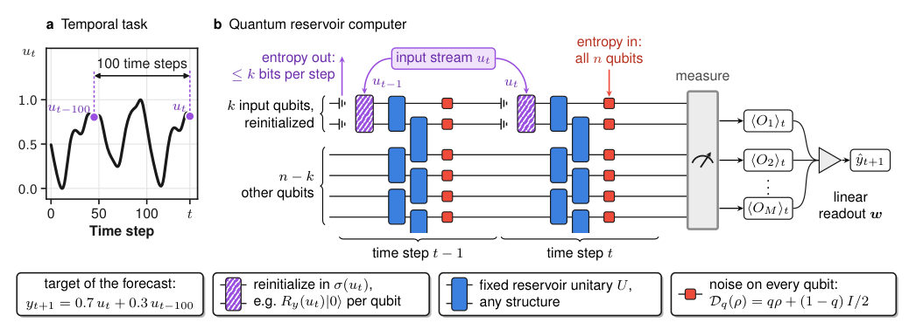
<figcaption class="paper-figure-caption"><b>Fig 1.</b> FIG. 2. Noisy quantum reservoir computing. (a) Forecasting yt+1 = 0.7 ut +0.3 ut−100 needs a memory of 100 time steps. (b) Every time step reinitializes k input qubits in σ(ut), applies a fixed unitary U to all n qubits, and depolarizes every qubit; a linear readout predicts ˆyt+1. Noise injects entropy into all n qubits, but only the k input qubits carry it out.</figcaption>
</figure>
<figure class="paper-figure-card">
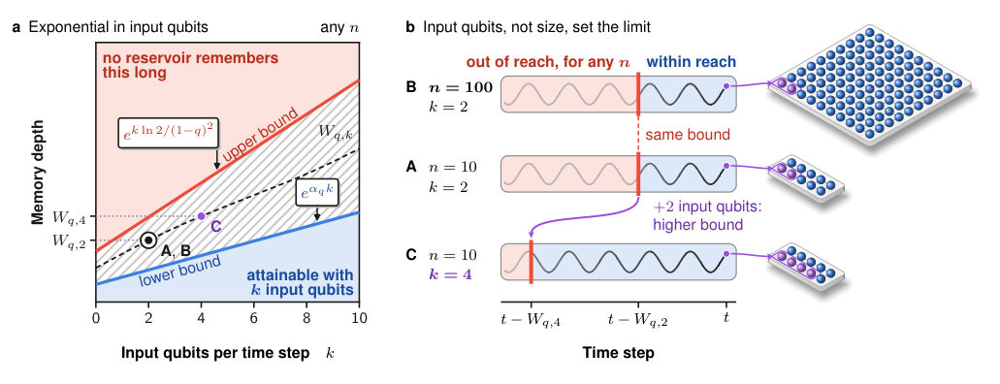
<figcaption class="paper-figure-caption"><b>Fig 2.</b> FIG. 3. The memory limit (schematic). (a) The optimum over reservoir sizes lies between two exponentials in k (Theorem 1); A, B, and C mark the reservoirs of (b). (b) One input stream drives three reservoirs: A and B differ tenfold in size but share k = 2 input qubits, and C is A with two more input qubits. Inputs older than the bound (red) are out of reach for every reservoir with the same k, so A and B share the bound Wq,2, and C’s bound Wq,4 lies further back.</figcaption>
</figure>
<figure class="paper-figure-card">
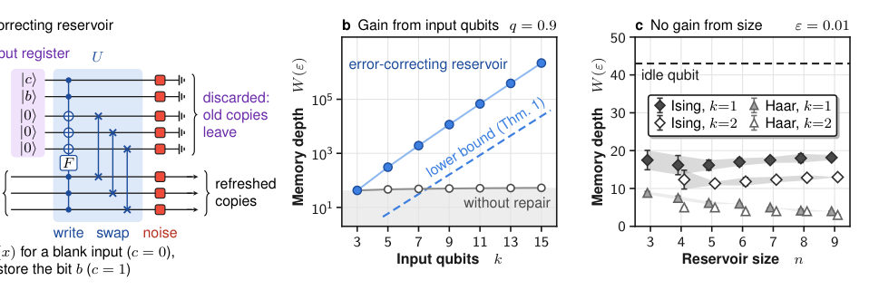
<figcaption class="paper-figure-caption"><b>Fig 3.</b> FIG. 4. Attaining the limit. (a) Error-correcting reservoir (r = 3, k = 5): U writes the new bit, or the majority of the stored copies, into fresh ancillas and swaps them into the memory; the old copies leave with the input register. (b) With its fresh qubits used for repair, the memory depth of the error-correcting reservoir (exact single-qubit readout, n = 2k −2) grows exponentially with k, above the lower bound of Theorem 1; without repair (gray), the same r = k−2 copies gain almost nothing. Depths are continuous threshold crossings, rounded up to integers. (c) Within the sampled ensembles, standard reservoirs gain nothing from size at k = 1 (filled) or k = 2 (open); mean ± s.d., six...</figcaption>
</figure>
</div>

<p><strong>Summary.</strong> This work establishes a fundamental, exponential memory ceiling for noisy quantum reservoirs, proving that the memory retention time is dictated by the rate of fresh input qubits ($k$), not the physical size ($n$) of the system. The authors provide both an upper bound and an explicit construction that achieves this optimal scaling. This result sets a critical resource law for quantum information processing under realistic noise conditions.</p>
<p><strong>Why it may be interesting.</strong> It provides a rigorous, fundamental resource law for quantum memory storage, showing that the input rate ($k$) is the bottleneck, which is crucial for designing robust quantum computation protocols.</p>
<details>
<summary>Detailed structure</summary>
<p><strong>Main problem.</strong> The paper determines the fundamental theoretical limit on how long a quantum system (reservoir) can retain memory when subjected to continuous depolarizing noise.</p>
<p><strong>Main result.</strong> The memory depth is fundamentally limited by the rate at which fresh input qubits ($k$) are reinitialized, scaling exponentially as $\exp[O(k)]$, independent of the total reservoir size ($n$).</p>
<p><strong>Method.</strong> The proof analyzes the decay of distinguishability between two echo states corresponding to different input histories, utilizing entropy budgeting and purity constraints imposed by the noise channel.</p>
<p><strong>Model / system.</strong> The model is Quantum Reservoir Computing (QRC) using $n$ interacting qubits subjected to depolarizing noise at every time step. Information is injected via $k$ reinitialized input qubits.</p>
<p><strong>Key observables.</strong> Memory Depth ($W(\epsilon)$), Purity ($\log_2 P_2$), Trace Distance between echo states.</p>
<p><strong>Important parameters / regimes.</strong> Number of fresh input qubits ($k$), Reservoir size ($n$), Noise parameter ($q$), Error tolerance ($\epsilon$).</p>
<p><strong>Assumptions / limitations.</strong> The analysis assumes Markovian dynamics without classical feedback, and the bound applies to any unital noise channel.</p>
<p><strong>Figures summary.</strong> Figures schematically demonstrate that both the theoretical upper bound and an achievable lower bound scale exponentially with $k$, confirming the resource law.</p>
<p><strong>Paper structure.</strong> The paper establishes the problem by defining the noisy QRC setup, derives the exponential upper bound using entropy arguments, and then constructs an explicit error-correcting reservoir that achieves this lower bound, contrasting it with standard reservoir behavior.</p>
</details>
<details>
<summary>Abstract</summary>
<p>Fresh qubits, not size, set how long a noisy quantum system can remember. With $k$ input qubits reinitialized per time step, the longest memory any reservoir can attain under depolarizing noise is $\exp[Θ(k)]$ time steps, whatever its size, dynamics, and input encoding. A universal upper bound and an explicit reservoir that attains the exponential scaling establish this optimal resource law. The bound depends on the dynamics only through the entropy that fresh qubits remove per time step, so it holds for any Markovian noisy dynamics without feedback, including measurement-free error correction.</p>
</details>
<p><sub><a href="#top">↑ back to top</a></sub></p>

<p><a id="paper-2610.24542"></a></p>
<h3 id="comment-on-the-polarization-hierarchy-for-polynomial-optimization-over-convex-bodies-with-applications-to-nonnegative-matrix-rank"><a href="http://arxiv.org/abs/2610.24542v1">Comment on "The polarization hierarchy for polynomial optimization over convex bodies, with applications to nonnegative matrix rank"</a></h3>
<p><strong>Authors:</strong> Julius A. Zeiss<br>
<strong>Type:</strong> theory · <strong>Category:</strong> other · <strong>PDF:</strong> <a href="https://arxiv.org/pdf/2610.24542v1">https://arxiv.org/pdf/2610.24542v1</a><br>
<strong>Analysis basis:</strong> full PDF text, analyzed in chunks
<strong>Topic relevance:</strong> <code>Keldysh / 2PI / non-Gaussian methods</code> <strong>1/5</strong> · <code>analog quantum simulation</code> <strong>1/5</strong> · <code>quantum measurements</code> <strong>1/5</strong></p>
<div class="figure-strip-hint">↔ Scroll figures horizontally</div>
<div class="paper-figures-scroll">
<figure class="paper-figure-card">
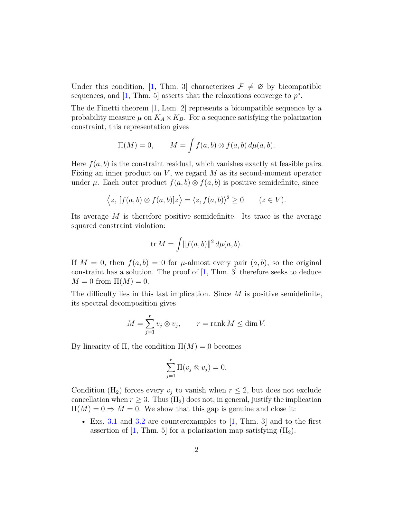
<figcaption class="paper-figure-caption"><b>Fig 1.</b> Low-resolution page preview, page 2</figcaption>
</figure>
<figure class="paper-figure-card">
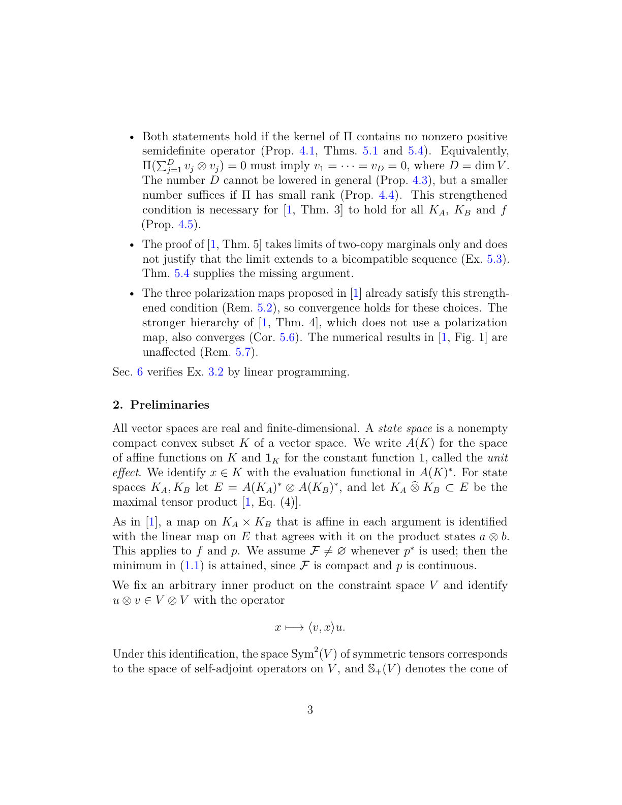
<figcaption class="paper-figure-caption"><b>Fig 2.</b> Low-resolution page preview, page 3</figcaption>
</figure>
<figure class="paper-figure-card">
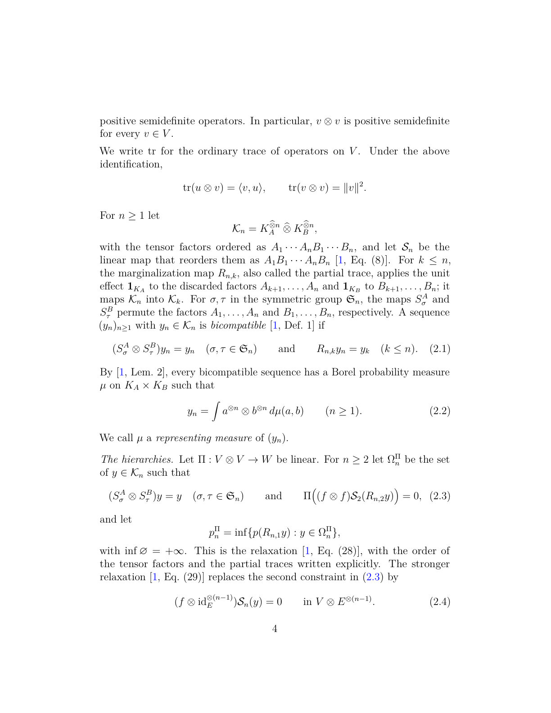
<figcaption class="paper-figure-caption"><b>Fig 3.</b> Low-resolution page preview, page 4</figcaption>
</figure>
<figure class="paper-figure-card">
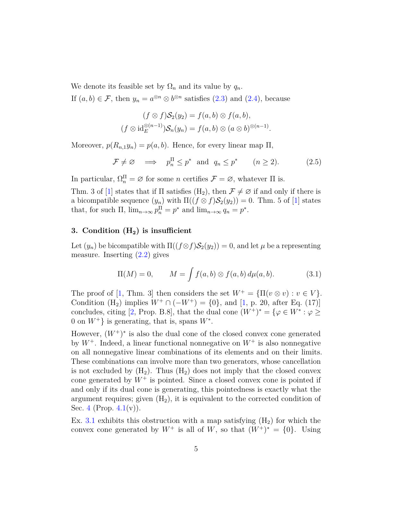
<figcaption class="paper-figure-caption"><b>Fig 4.</b> Low-resolution page preview, page 5</figcaption>
</figure>
<figure class="paper-figure-card">
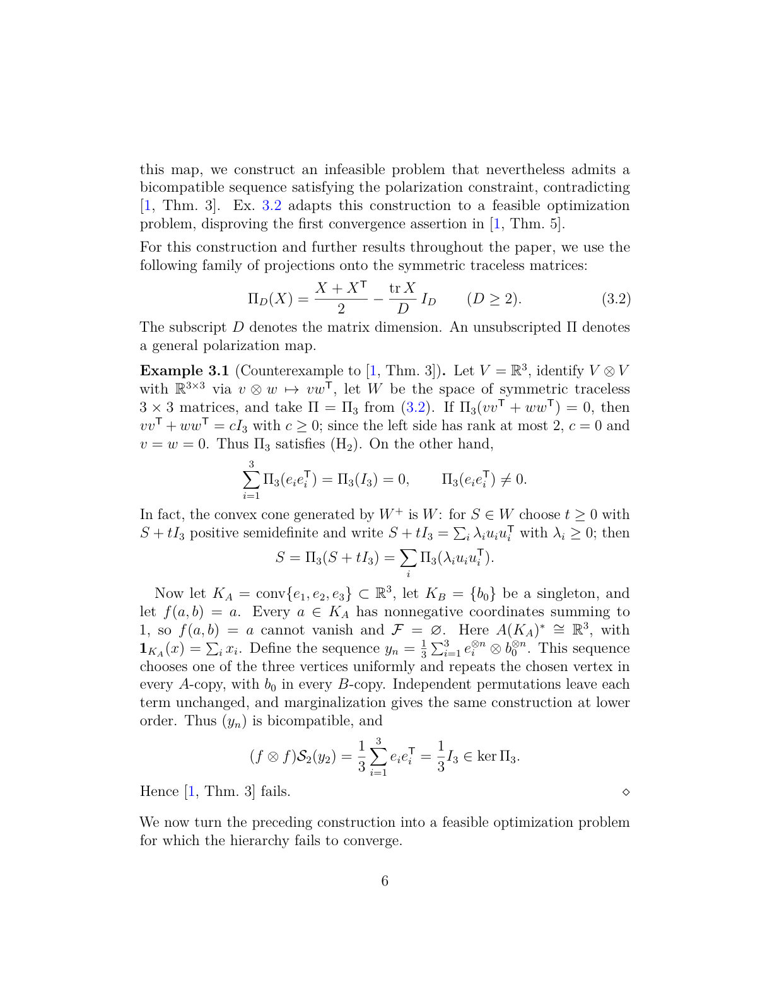
<figcaption class="paper-figure-caption"><b>Fig 5.</b> Low-resolution page preview, page 6</figcaption>
</figure>
</div>

<p><strong>Summary.</strong> This paper rigorously corrects mathematical claims regarding the polarization hierarchy used to solve polynomial optimization problems over convex sets. It proves that a stronger algebraic condition (HD) is necessary and sufficient for the hierarchy to correctly characterize feasibility and guarantee convergence to the true optimum. This has implications for understanding the limits of relaxation techniques in optimization theory.</p>
<p><strong>Why it may be interesting.</strong> While the core topic is convex optimization, the reliance on advanced mathematical tools like polarization maps and convergence theorems mirrors the rigorous mathematical foundations required in quantum information theory for characterizing state spaces and entanglement.</p>
<details>
<summary>Detailed structure</summary>
<p><strong>Main problem.</strong> The paper revisits and corrects the feasibility and convergence claims of the polarization hierarchy used for polynomial optimization over convex bodies, particularly concerning non-negative matrix rank.</p>
<p><strong>Main result.</strong> The original assumption (H2) is insufficient; the necessary and sufficient condition is a stronger algebraic condition (HD), which restores the equivalence between geometric feasibility and the satisfaction of the polarization constraint.</p>
<p><strong>Method.</strong> The authors use counterexamples to disprove existing theorems and establish necessary and sufficient algebraic conditions by analyzing the properties of the polarization map $\Pi$ and its kernel.</p>
<p><strong>Model / system.</strong> The framework involves polynomial optimization over convex bodies $K_A 	imes K_B$, formulated via a polarization hierarchy that uses tensor products and polarization maps $\Pi$.</p>
<p><strong>Key observables.</strong> The polarization constraint $\Pi((f \otimes f)S^2(y^2)) = 0$, the objective function values $p_{\Pi}^n$, and the total variation distance $dTV(T_0, T)$.</p>
<p><strong>Important parameters / regimes.</strong> The order of the hierarchy ($n$), the algebraic condition (HD), and the structure of the constraint function $f(a, b)$.</p>
<p><strong>Assumptions / limitations.</strong> The primary assumption corrected is that the original condition (H2) is insufficient, requiring the stronger algebraic condition (HD) for the characterization to hold.</p>
<p><strong>Figures summary.</strong> The text references specific counterexamples (Ex. 3.1, Ex. 3.2) and shows convergence patterns in Table 1 for hierarchy values.</p>
<p><strong>Paper structure.</strong> The paper proceeds by identifying the failure of the original assumptions using counterexamples, establishing the necessary and sufficient condition (HD) via algebraic analysis (Prop. 4.1), and finally proving the corrected characterization theorems for feasibility and convergence (Thm. 5.1, Thm. 5.4).</p>
</details>
<details>
<summary>Abstract</summary>
<p>We revisit the feasibility and convergence claims for the polarization hierarchy of Plávala, Ligthart and Gross [Linear Algebra Appl.\ 723 (2025) 15--32]. Counterexamples show that the stated assumption is insufficient for the feasibility characterization and for convergence of the hierarchy with the polarization constraint. We establish corrected results under a stronger algebraic condition and supply a missing compactness argument.</p>
</details>
<p><sub><a href="#top">↑ back to top</a></sub></p>

<p><a id="paper-2610.24175"></a></p>
<h3 id="electric-flux-as-a-criterion-for-string-breaking-and-schwinger-pair-production"><a href="http://arxiv.org/abs/2610.24175v1">Electric Flux as a Criterion for String Breaking and Schwinger Pair Production</a></h3>
<p><strong>Authors:</strong> Sebastian Grieninger<br>
<strong>Type:</strong> theory · <strong>Category:</strong> other · <strong>PDF:</strong> <a href="https://arxiv.org/pdf/2610.24175v1">https://arxiv.org/pdf/2610.24175v1</a><br>
<strong>Analysis basis:</strong> full PDF text, analyzed in chunks
<strong>Topic relevance:</strong> <code>Keldysh / 2PI / non-Gaussian methods</code> <strong>1/5</strong> · <code>methods for driven-dissipative</code> <strong>1/5</strong> · <code>quantum measurements</code> <strong>1/5</strong></p>
<div class="figure-strip-hint">↔ Scroll figures horizontally</div>
<div class="paper-figures-scroll">
<figure class="paper-figure-card">
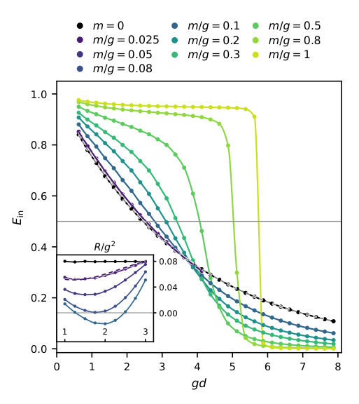
<figcaption class="paper-figure-caption"><b>Fig 1.</b> FIG. 1. The vacuum subtracted electric field at midpoint be- tween the external charges Ein for q = 1, θ = 0, on a ring with N = 160 and ga = 1/8. The gray dashed curve is the massless free-boson result Eq. (15). The colored dashed curve at m/g = 0.025 incorporates the first-order mass cor- rection. The horizontal line identifies Ein = 1/2. Increasing m/g yields a convex region in gd that leads to a plateau at m/g followed by a sharp transition. The inset shows the cur- vature R of Eq. (17) for the light masses. Negative curvature indicates the developing concave region and is an imprint of the formation and breaking of the flux tube.</figcaption>
</figure>
<figure class="paper-figure-card">
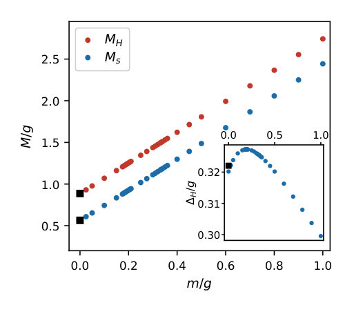
<figcaption class="paper-figure-caption"><b>Fig 2.</b> FIG. 3. Static-light pair energy MH and neutral vacuum me- son mass Ms, at ga = 1/8. The inset shows their difference ∆H = MH−Ms. Black squares give the exact massless values. The initial rise of ∆H is fixed by Eq. (21), while its shallow maximum near m/g = 0.2 is a numerical result.</figcaption>
</figure>
<figure class="paper-figure-card">
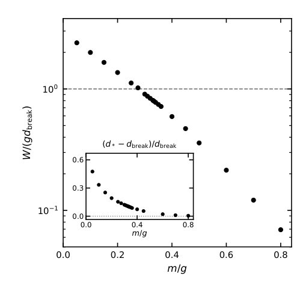
<figcaption class="paper-figure-caption"><b>Fig 3.</b> FIG. 2. Discharge width and gap minimum as a function of m/g. Main: width-to-separation ratio W/(gdbreak). Inset: Relative separation of the location of the gap minimum d∗ and dbreak.</figcaption>
</figure>
<figure class="paper-figure-card">
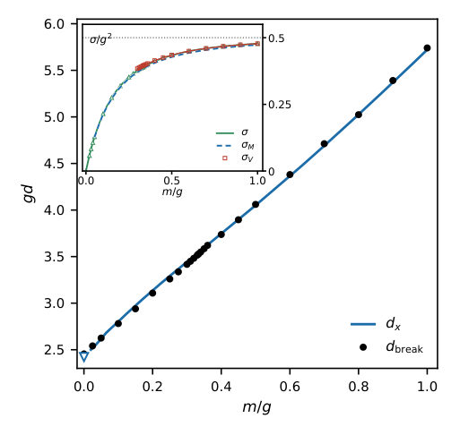
<figcaption class="paper-figure-caption"><b>Fig 4.</b> FIG. 4. Comparison of dbreak (points) and the screened en- ergy crossing dx (curve), Eq. (38), at ga = 1/8. The vac- uum susceptibility, meson mass and static-light plateau fix the curve independently. The open triangle is the analytic m →0+ limit of dx, distinct from dbreak(0). The inset compares σ = 2π2χtop with the mass-based prediction σM, Eq. (31) and the slope σV of the approximately linear part of the static potential. The latter is shown only for m/g ≥0.3, where this linear part can be resolved.</figcaption>
</figure>
<figure class="paper-figure-card">

<figcaption class="paper-figure-caption"><b>Fig 5.</b> Figure 4 compares this energy crossing with dbreak ob- tained from the midpoint electric field. The agreement is excellent for all masses considered. Note that the in- puts are determined independently of that separation: Ms and σ come from vacuum calculations and MH from the static potential at large separation. The agreement with dbreak connects the local loss of flux to the energetic competition between an intact string with the screened configuration. Where the potential contains a resolved linear interval, its slope provides a separate test of the bulk coefficient, shown in the inset of Fig. 4. At small mass screening ob- scures the linear regime, while the string tension from the...</figcaption>
</figure>
</div>

<p><strong>Summary.</strong> This work establishes electric flux as the key diagnostic for string breaking and Schwinger pair production in the massive Schwinger model. By analyzing entanglement entropy, the authors show that the point of string breaking corresponds to a maximum in entanglement, linking this process to the vacuum transition structure. The methodology combines lattice field theory simulations with quantum information measures.</p>
<p><strong>Why it may be interesting.</strong> The deep connection drawn between entanglement structure (entanglement entropy peaks) and fundamental non-perturbative phenomena like string breaking provides a powerful quantum information diagnostic tool for strongly coupled field theories.</p>
<details>
<summary>Detailed structure</summary>
<p><strong>Main problem.</strong> The paper investigates string breaking and Schwinger pair production, using the electric flux as a fundamental criterion for these non-perturbative quantum field theory processes.</p>
<p><strong>Main result.</strong> String breaking is characterized by the midpoint electric field falling to half a flux unit, which corresponds to a maximum in the entanglement entropy, linking it to vacuum transition physics.</p>
<p><strong>Method.</strong> The study employs numerical calculations using Hamiltonian lattice formulations (Matrix Product States) and analytic solutions derived from minimizing energy functionals in the massive Schwinger model.</p>
<p><strong>Model / system.</strong> The primary model is the massive Schwinger model (QED in 1+1 dimensions), used as a minimal realization of confinement, involving static external charges and a $\theta$-angle background.</p>
<p><strong>Key observables.</strong> Electric Flux ($E$), String Potential ($V(d)$), Entanglement Entropy, and the order parameter $\text{Ein}(d)$ for string breaking.</p>
<p><strong>Important parameters / regimes.</strong> The flux unit (1), the fermion mass ($m$), the external charge ($q$), and the $\theta$-angle.</p>
<p><strong>Assumptions / limitations.</strong> The analysis relies on extending descriptions perturbatively to first order in the fermion mass, and uses the massive Schwinger model as the physical proxy for confinement.</p>
<p><strong>Figures summary.</strong> Figures illustrate the electric flux diagnostic ($ ext{Ein}(d)$) showing the transition point, and show the spatial dependence of charge coherence across the string structure.</p>
<p><strong>Paper structure.</strong> The paper develops the theory by defining the flux criterion, calculating the energy balance in the massive Schwinger model, analyzing entanglement entropy peaks at the half-flux point, and finally comparing the structure of the vacuum transition to string breaking.</p>
</details>
<details>
<summary>Abstract</summary>
<p>We define string breaking by the midpoint electric field falling to half a flux unit. In the massive Schwinger model, an energy balance between intact string and screened configuration predicts this separation using only vacuum observables and meson masses as input. We observe numerically that this half flux point corresponds to equal weights of the two configurations thus explaining the observed peak of the entanglement entropy as maximal uncertainty of the binary flux. The same binary uncertainty explains the entanglement peak at the vacuum transition. Near breaking, screening organizes part of the spatial entanglement between the string interior and exterior into a nearly maximally entangled bit. Within the selected flux sectors, this approximate encoded Bell pair records whether the flux is screened and nearly separates from the remaining correlations. The vacuum transition exhibits the same structure. The string and the $θ$-vacuum reveal a matching structure of the capacity of entanglement minimum at their transition point, linking their entanglement spectra. The transition rearranges degrees of freedom coherently as revealed by the entanglement asymmetry and Robustness of Magic of disjoint subregions. Finally, we construct the $θ$-vacuum and string wavefunctions with high fidelity using a restricted Boltzmann machine ansatz.</p>
</details>
<p><sub><a href="#top">↑ back to top</a></sub></p>

<p><a id="paper-2610.25105"></a></p>
<h3 id="generative-marginal-learning-for-finite-size-molecular-simulation-with-application-to-stress-calculation"><a href="http://arxiv.org/abs/2610.25105v1">Generative marginal learning for finite-size molecular simulation with application to stress calculation</a></h3>
<p><strong>Authors:</strong> Cheng Yuan<br>
<strong>Type:</strong> theory · <strong>Category:</strong> statistical mechanics · <strong>PDF:</strong> <a href="https://arxiv.org/pdf/2610.25105v1">https://arxiv.org/pdf/2610.25105v1</a><br>
<strong>Analysis basis:</strong> full PDF text, analyzed in chunks
<strong>Topic relevance:</strong> <code>Keldysh / 2PI / non-Gaussian methods</code> <strong>1/5</strong> · <code>analog quantum simulation</code> <strong>1/5</strong> · <code>methods for driven-dissipative</code> <strong>1/5</strong></p>
<div class="figure-strip-hint">↔ Scroll figures horizontally</div>
<div class="paper-figures-scroll">
<figure class="paper-figure-card">
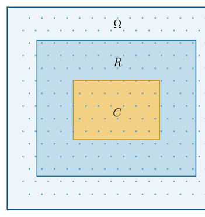
<figcaption class="paper-figure-caption"><b>Fig 1.</b> Figure 1: The domain reduction used by GML. The full domain Ωcontains N atoms. The retained region R ⊂Ωcontains M atoms with coordinates x; the exterior coordinates y are integrated out. The observation core C ⊂R is surrounded by the interaction buffer R\C. GML learns the joint distribution of all retained coordinates from full-system samples, while observables are evaluated in C. The coordinates shown here precede the translation alignment used for training (Fig. 2). Atomic dots and region sizes are schematic.</figcaption>
</figure>
<figure class="paper-figure-card">
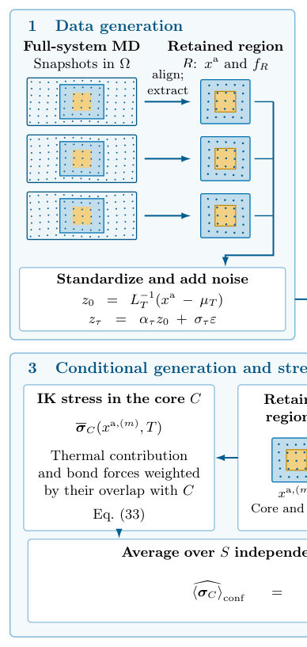
<figcaption class="paper-figure-caption"><b>Fig 2.</b> Figure 2: Data generation, training, and stress estimation with GML. Blue and orange denote R and C as in Fig. 1; icons are schematic. Full-system molecular dynamics sup- plies configurations and, for force-alignment training, forces including exterior interactions. Translation alignment gives the retained coordinates xa defined in Eq. (12); corrected forces follow Eq. (24). The losses average over temperature, full-system configuration, noise level, and Gaussian noise according to P in Eq. (16), with D = dM. At fixed T, independent samples xa,(m), m = 1, . . . , S, give the mean buffered Irving–Kirkwood (IK) stress, including the thermal contribution and bonds crossing C.</figcaption>
</figure>
<figure class="paper-figure-card">
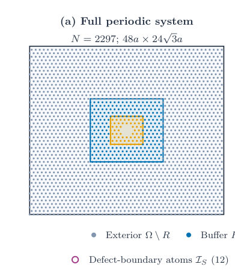
<figcaption class="paper-figure-caption"><b>Fig 3.</b> Figure 3: Reference geometry of the seven-vacancy crystal. (a) Full periodic system; the blue and orange rectangles delimit R and C. (b) Retained region and RDF sampling sets. Regional centers lie in C; purple rings mark the twelve atoms immediately bordering the vacancy cluster, whose labels form IS. The green plus marks one of these atoms, and its dashed circle shows the neighbor-search radius 3.4a. Neighbors may lie in the buffer. The two panels use different scales.</figcaption>
</figure>
<figure class="paper-figure-card">

<figcaption class="paper-figure-caption"><b>Fig 4.</b> Figure 4: Regional RDFs after 100000 training updates. Rows correspond to T ∗= 0.07 (held out) and 0.10 (training). The left column shows gC and the right column its signed difference from large-cell MD on a linear scale. Insets resolve the first peak and the smaller GML differences.</figcaption>
</figure>
<figure class="paper-figure-card">
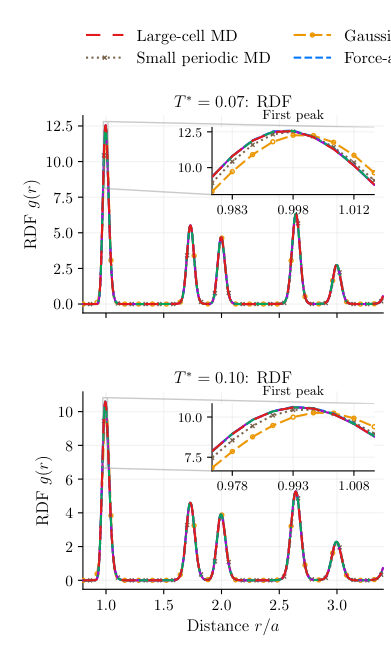
<figcaption class="paper-figure-caption"><b>Fig 5.</b> Figure 6 and Table 3 show that GML reduces the temperature-dependent biases of both baselines. Small periodic MD is less compressive than the reference, whereas the Gaussian model is more compressive; both discrepan- cies grow overall with temperature. Among the three GML models, force- alignment training gives the smallest stress discrepancy at three training temperatures and joint training at two. Denoising training gives the smallest discrepancy at all four held-out temperatures. This agrees with the RDF evidence for stronger final generalization with denoising training. However, these final-checkpoint results do not show whether force-alignment training reaches accurate stress estimates...</figcaption>
</figure>
</div>

<p><strong>Summary.</strong> This paper introduces Generative Marginal Learning (GML), a novel framework using conditional diffusion models to estimate the equilibrium marginal distribution of a localized region in molecular simulations. By learning the influence of the surrounding environment implicitly, GML accurately calculates local observables like the stress tensor, significantly outperforming traditional methods that suffer from finite-size artifacts.</p>
<p><strong>Why it may be interesting.</strong> While focused on classical MD, the use of advanced generative modeling (diffusion models) to extract equilibrium statistical properties from complex, constrained physical systems is highly relevant to developing next-generation simulation tools for quantum many-body systems.</p>
<details>
<summary>Detailed structure</summary>
<p><strong>Main problem.</strong> To accurately calculate macroscopic physical quantities, such as the Irving-Kirkwood stress, in a localized region of a large molecular system without the computational cost or boundary artifacts of full-system simulations.</p>
<p><strong>Main result.</strong> The Generative Marginal Learning (GML) framework significantly improves the accuracy of pair structure and local stress estimation compared to small periodic molecular dynamics simulations by mitigating finite-size effects.</p>
<p><strong>Method.</strong> GML employs a conditional diffusion model trained on large-system equilibrium samples to learn the marginal distribution of the retained region by integrating out the surrounding environment degrees of freedom.</p>
<p><strong>Model / system.</strong> The system is crystalline matter simulated via molecular dynamics (MD) with pair potentials. The model learns the marginal density $p_R(x | A, T)$ from the full-system density $p(x, y | A, T)$.</p>
<p><strong>Key observables.</strong> Spatially averaged Irving-Kirkwood (IK) stress ($\langle\sigma_C
angle_{	ext{conf}}$), pair structure (RDFs), and the effective potential $V(x; A, T)$.</p>
<p><strong>Important parameters / regimes.</strong> Temperature ($T$), system size (large vs. small periodic cells), and the specific defect type (e.g., vacancy).</p>
<p><strong>Assumptions / limitations.</strong> The framework assumes that the marginal distribution can be accurately modeled by a conditional diffusion process, and the force-alignment loss provides a necessary constraint on the learned potential gradient.</p>
<p><strong>Figures summary.</strong> Figure 1 illustrates the domain reduction from a full system ($\Omega$) to a retained region ($R$) and an observation core ($C$). Figure 10 compares defect-neighbor RDFs across various simulation methods, showing GML's improved accuracy.</p>
<p><strong>Paper structure.</strong> The paper introduces GML, derives the necessary mathematical identities linking forces and scores, details the training using both denoising and force-alignment losses, and applies the method to estimate the IK stress near a vacancy defect, concluding with comparative numerical results.</p>
</details>
<details>
<summary>Abstract</summary>
<p>We propose generative marginal learning (GML), a framework for equilibrium sampling and local observable estimation in molecular simulations. By training a conditional diffusion model on large-system simulations, GML learns the marginal distribution of a retained region, enabling configuration generation without explicitly simulating the surrounding environment or imposing periodic boundary conditions on the retained region. We derive a marginal effective potential and the associated conditional mean-force identity, which provide the basis for both denoising and force-alignment training. As an application, we estimate the spatially averaged Irving--Kirkwood stress near a vacancy defect. Numerical results demonstrate that GML substantially improves pair structure and local stress accuracy compared with small periodic molecular dynamics simulations, mitigating finite-size effects in calculating local molecular observables.</p>
</details>
<p><sub><a href="#top">↑ back to top</a></sub></p>

<p><a id="paper-2610.26053"></a></p>
<h3 id="gini-coefficient-of-scientists-and-universities"><a href="http://arxiv.org/abs/2610.26053v1">Gini coefficient of scientists and universities</a></h3>
<p><strong>Authors:</strong> Klaus M. Frahm, Dima L. Shepelyansky<br>
<strong>Type:</strong> theory · <strong>Category:</strong> statistical mechanics · <strong>PDF:</strong> <a href="https://arxiv.org/pdf/2610.26053v1">https://arxiv.org/pdf/2610.26053v1</a><br>
<strong>Analysis basis:</strong> full PDF text, analyzed in chunks
<strong>Topic relevance:</strong> <code>driven-dissipative phase transition</code> <strong>1/5</strong> · <code>non-equilibrium universality</code> <strong>1/5</strong> · <code>scars &amp; prethermalization</code> <strong>1/5</strong></p>
<div class="figure-strip-hint">↔ Scroll figures horizontally</div>
<div class="paper-figures-scroll">
<figure class="paper-figure-card">
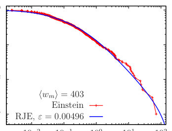
<figcaption class="paper-figure-caption"><b>Fig 1.</b> Figure 1. Left: Comparison of the citation Lorenz curve for Einstein (red data curve) with the theoretical RJE model (blue curve). The x-axis corresponds to the cumulative fraction of households/papers (h) and the y-axis to the cumulative fraction of wealth/citations (w). The dashed black line corresponds to the line of perfect equipartition w = h. The corresponding values of a and ε have been determined by minimizing the geometrical curve distance between both curves and such that they have the same Gini coefficient G = 0.883. Right: Pareto curve C(wm) for the same data (red data curve) where C(wm) represents the fraction of articles having more citations than wm (analogous to wealth). The...</figcaption>
</figure>
<figure class="paper-figure-card">
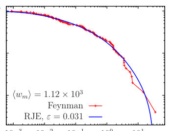
<figcaption class="paper-figure-caption"><b>Fig 2.</b> Figure 2. Same as Fig. 1 for R. Feynman.</figcaption>
</figure>
<figure class="paper-figure-card">
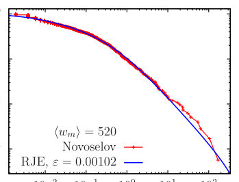
<figcaption class="paper-figure-caption"><b>Fig 3.</b> Figure 3. Same as Fig. 1 for K. Novoselov.</figcaption>
</figure>
<figure class="paper-figure-card">
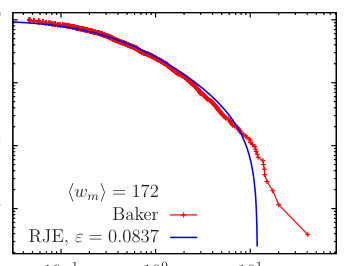
<figcaption class="paper-figure-caption"><b>Fig 4.</b> Figure 4. Same as Fig. 1 for D. Baker.</figcaption>
</figure>
<figure class="paper-figure-card">
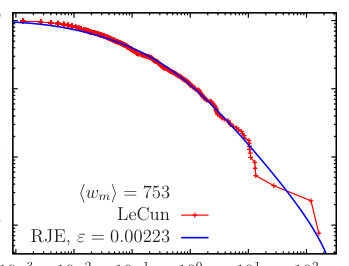
<figcaption class="paper-figure-caption"><b>Fig 5.</b> Figure 5. Same as Fig. 1 for Y. LeCun.</figcaption>
</figure>
</div>

<p><strong>Summary.</strong> This paper analyzes the inequality in scientific recognition by applying economic measures like the Gini coefficient to citation data. It models these citation distributions using advanced concepts from statistical mechanics, specifically the Rayleigh-Jeans thermalization framework. The findings demonstrate that citation accumulation follows highly unequal patterns, mirroring global wealth distribution.</p>
<p><strong>Why it may be interesting.</strong> While the subject matter is bibliometrics, the rigorous application of statistical mechanics concepts (RJ/RJE distributions, thermalization) to model complex, emergent distributions of scientific recognition provides a powerful analogy for understanding non-equilibrium dynamics in complex systems.</p>
<details>
<summary>Detailed structure</summary>
<p><strong>Main problem.</strong> The paper applies concepts from economic inequality, specifically the Gini coefficient, to analyze the citation distributions of scientists and universities.</p>
<p><strong>Main result.</strong> The citation distributions exhibit high levels of inequality (e.g., average Gini coefficient of 0.81 for Nobel laureates), which can be modeled using concepts from statistical mechanics like Rayleigh-Jeans thermalization.</p>
<p><strong>Method.</strong> The authors construct Lorenz and Pareto curves using citation counts as proxies for wealth, and then fit these empirical curves to theoretical models derived from statistical mechanics.</p>
<p><strong>Model / system.</strong> The system analyzed is the citation network of scientists and universities. The theoretical framework employs the Wealth Thermalization Hypothesis (WTH) and models the distribution using Rayleigh-Jeans (RJ) and extended RJ (RJE) statistical distributions.</p>
<p><strong>Key observables.</strong> Gini coefficient (G), Lorenz curve, Pareto curve, and citation shares held by the top percentiles of scientists/universities.</p>
<p><strong>Important parameters / regimes.</strong> Gini coefficient (G), temperature/chemical potential parameters ($\epsilon, a, \mu$), and citation thresholds ($N_{min}=500$).</p>
<p><strong>Assumptions / limitations.</strong> The core assumption is the analogy between citation counts and economic wealth ($c_m = w_m$), and that the underlying distribution follows a thermalized state described by RJ statistics.</p>
<p><strong>Figures summary.</strong> Figures compare the empirical Lorenz and Pareto curves for various datasets (e.g., Princeton, World 2021, Nobel laureates) against theoretical curves derived from RJE and RJS models.</p>
<p><strong>Paper structure.</strong> The paper progresses by defining the data sets, introducing the Rayleigh-Jeans properties, detailing the curve construction methods, presenting the main results (including specific Gini values), and discussing the thermalization assumptions.</p>
</details>
<details>
<summary>Abstract</summary>
<p>Using the public database of Google Scholar article citations of scientists and universities we apply the algorithm for constructing Lorenz curves to the resulting citation distributions. Using Lorenz and Pareto curves, broadly used for economic analyses of wealth inequality across countries, we show that this approach gives a useful insight of citation distributions of world-leading scientists characterized by the Gini coefficient $G$ obtained from the Lorenz curves. For articles of 15 Nobel laureates (including A. Einstein and R. Feynman) we find the average $G=0.81$ with 50% of articles capturing only 2.7% of all citations and the top 10% (1%) of articles capturing 71% (30%) of all citations. Furthmore, we determine for world-leading universities the Gini coefficient via the citations of affiliated scientists. We show that about 65 percent of all citations belonging to a university (e.g. Princeton, Cambridge) are generated only by 10 percent of their university scientists while 50% of scientists produce only 3% of all university citations. The citation distributions are well described by the concept of Rayleigh-Jeans thermalization and condensation with similarities traced to the world wealth inequality.</p>
</details>
<p><sub><a href="#top">↑ back to top</a></sub></p>

<p><a id="paper-2610.24857"></a></p>
<h3 id="where-should-we-look-for-the-deviation-from-quantum-mechanics"><a href="http://arxiv.org/abs/2610.24857v1">Where should we look for the deviation from quantum mechanics?</a></h3>
<p><strong>Authors:</strong> Jerome Nicolas, Albert Schwarz<br>
<strong>Type:</strong> theory · <strong>Category:</strong> other · <strong>PDF:</strong> <a href="https://arxiv.org/pdf/2610.24857v1">https://arxiv.org/pdf/2610.24857v1</a><br>
<strong>Analysis basis:</strong> full PDF text, analyzed in chunks
<strong>Topic relevance:</strong> <code>correlated / nonlocal dissipation</code> <strong>1/5</strong> · <code>driven-dissipative phase transition</code> <strong>1/5</strong> · <code>quantum measurements</code> <strong>1/5</strong></p>
<div class="figure-strip-hint">↔ Scroll figures horizontally</div>
<div class="paper-figures-scroll">
<figure class="paper-figure-card">
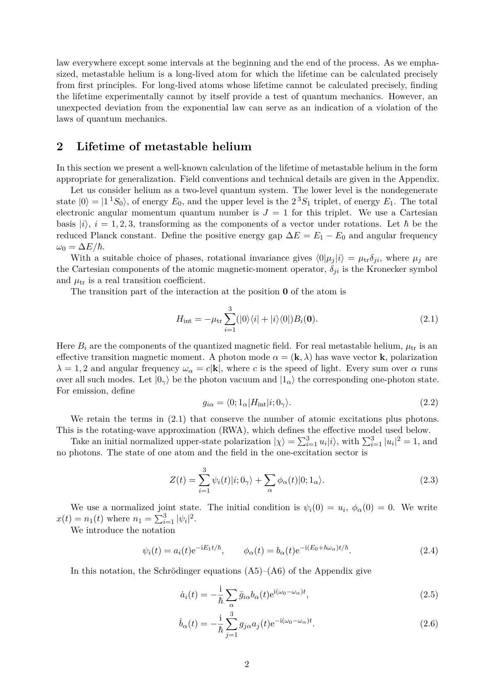
<figcaption class="paper-figure-caption"><b>Fig 1.</b> Low-resolution page preview, page 2</figcaption>
</figure>
<figure class="paper-figure-card">
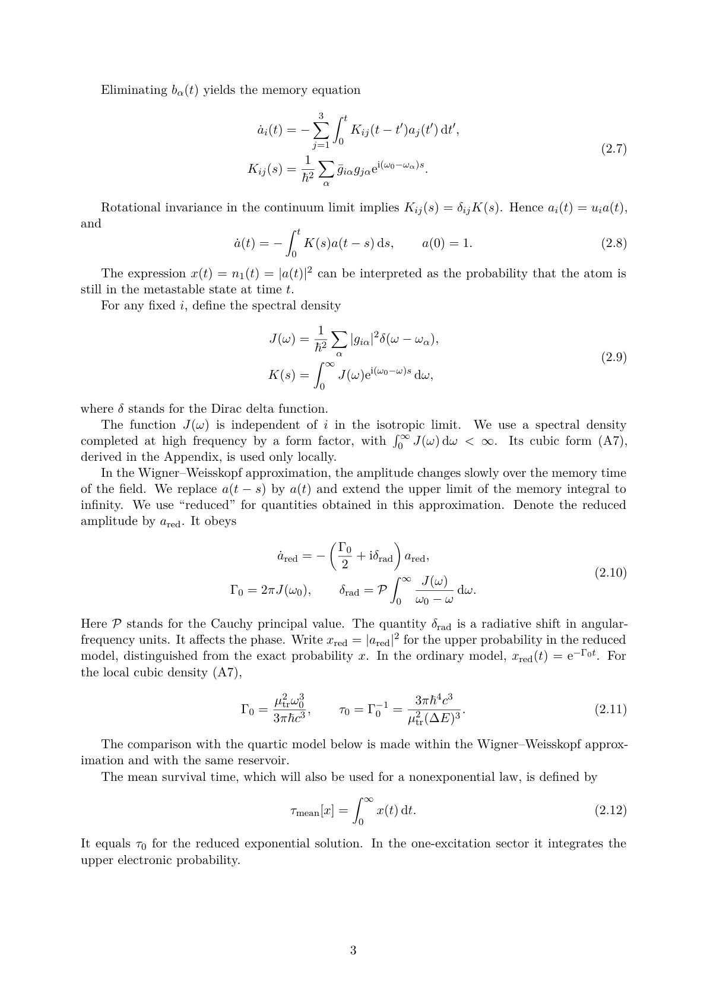
<figcaption class="paper-figure-caption"><b>Fig 2.</b> Low-resolution page preview, page 3</figcaption>
</figure>
<figure class="paper-figure-card">
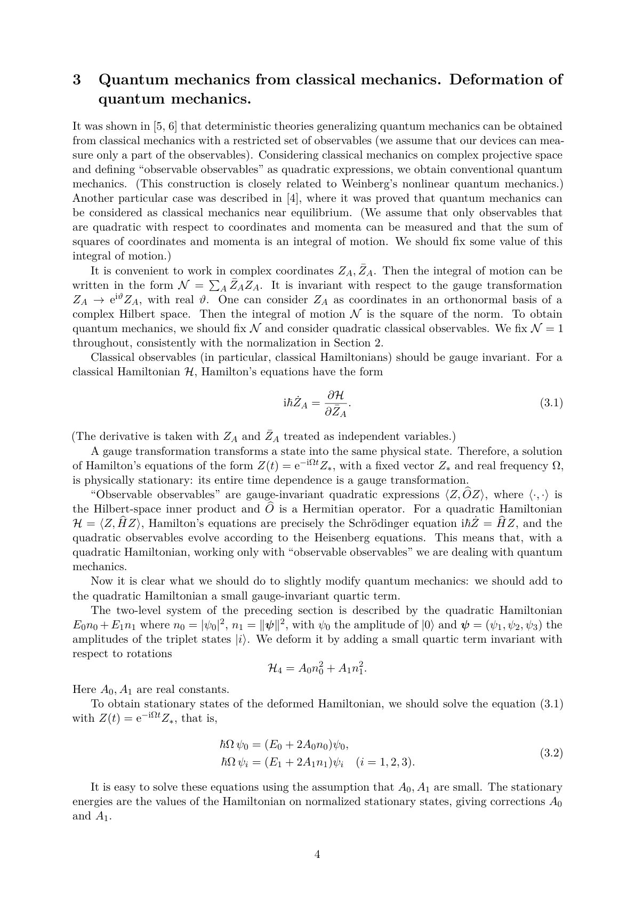
<figcaption class="paper-figure-caption"><b>Fig 3.</b> Low-resolution page preview, page 4</figcaption>
</figure>
<figure class="paper-figure-card">
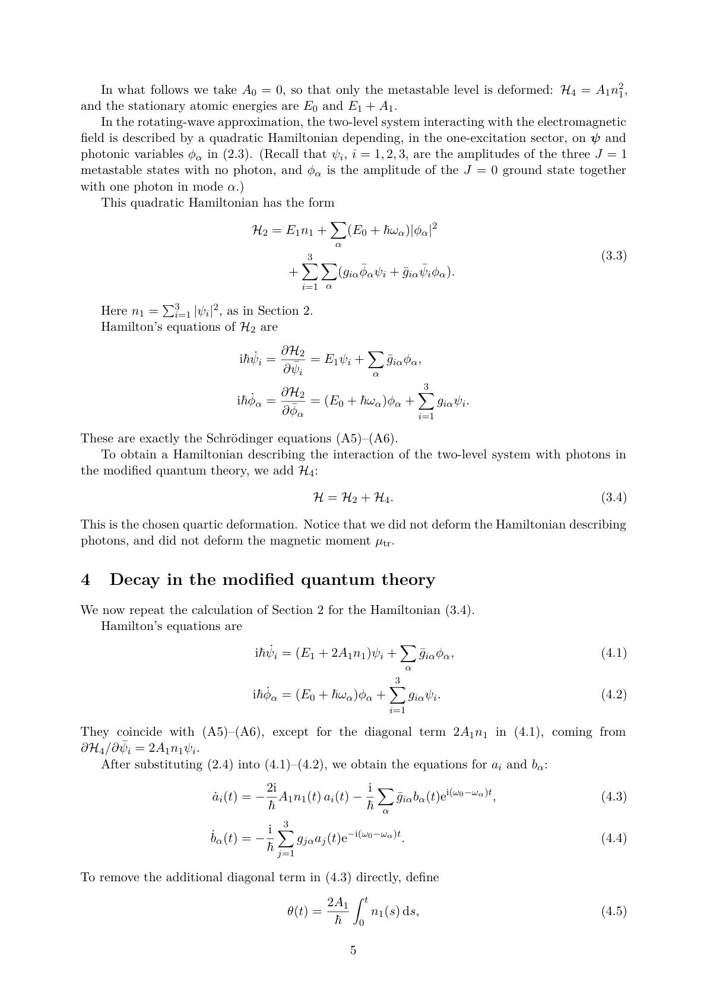
<figcaption class="paper-figure-caption"><b>Fig 4.</b> Low-resolution page preview, page 5</figcaption>
</figure>
<figure class="paper-figure-card">
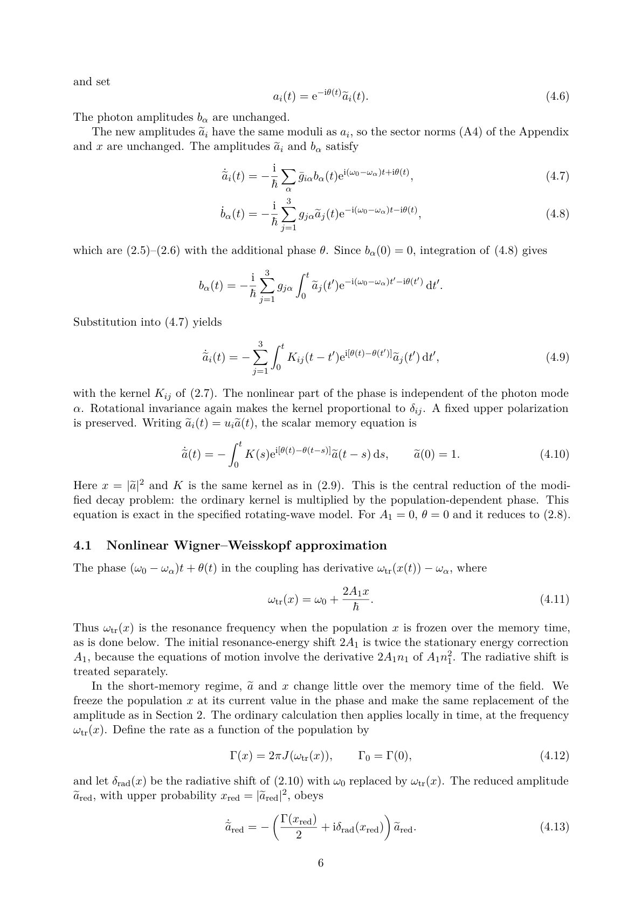
<figcaption class="paper-figure-caption"><b>Fig 5.</b> Low-resolution page preview, page 6</figcaption>
</figure>
</div>

<p><strong>Summary.</strong> This theoretical paper proposes using the decay of metastable helium as a sensitive test for deviations from standard quantum mechanics. By introducing a small quartic deformation to the system Hamiltonian, the authors analyze how this modification affects the decay law and the mean lifetime. The results suggest that even minute deviations can lead to measurable changes in the lifetime, making this a promising experimental avenue for fundamental physics.</p>
<p><strong>Why it may be interesting.</strong> This work directly addresses the theoretical search for physics beyond the Standard Model using precision measurements in atomic decay, which is a core topic in open quantum systems and quantum optics.</p>
<details>
<summary>Detailed structure</summary>
<p><strong>Main problem.</strong> The paper investigates potential deviations from standard quantum mechanics by analyzing the decay law and mean lifetime of metastable particles.</p>
<p><strong>Main result.</strong> The analysis shows that the absolute change in the mean lifetime can be significant even if the modification to the Hamiltonian is small, providing a sensitive diagnostic tool.</p>
<p><strong>Method.</strong> The decay process is analyzed using the Wigner–Weisskopf approximation applied to a modified two-level system Hamiltonian.</p>
<p><strong>Model / system.</strong> The system is a two-level quantum system (metastable helium) whose Hamiltonian is deformed by a small, gauge-invariant quartic term ($H_4$).</p>
<p><strong>Key observables.</strong> Mean survival time ($  au_{    ext{mean}}$), decay law, and the absolute change in the mean lifetime ($\delta    au$).</p>
<p><strong>Important parameters / regimes.</strong> The small coupling constant associated with the quartic deformation ($A_1/\Delta E$), and the long natural lifetime of the metastable state ($\approx 2$ hours).</p>
<p><strong>Assumptions / limitations.</strong> The analysis relies on the Wigner–Weisskopf approximation and the assumption that the modification can be modeled by a quartic term.</p>
<p><strong>Paper structure.</strong> The paper establishes the physical problem (testing QM linearity via decay) and then develops the theoretical framework by introducing the quartic deformation, deriving the memory equation, and finally analyzing the resulting decay rates and mean lifetime corrections.</p>
</details>
<details>
<summary>Abstract</summary>
<p>We argue that the experimental measurement of the lifetime and decay law of metastable helium is a promising way to find a deviation from quantum mechanics. We analyze the decay of the metastable state for a quartic deformation of quantum mechanics. We find that the absolute change of the mean lifetime can be significant even if the modification is small. We show that, in the Wigner--Weisskopf approximation, the deviation from the exponential law in the modified theory can occur on time scales comparable with the lifetime.</p>
</details>
<p><sub><a href="#top">↑ back to top</a></sub></p>

<p><a id="paper-2610.24304"></a></p>
<h3 id="cme-spectrumbench-can-llms-analyze-condensed-matter-spectral-data"><a href="http://arxiv.org/abs/2610.24304v1">CME-SpectrumBench: Can LLMs Analyze Condensed Matter Spectral Data?</a></h3>
<p><strong>Authors:</strong> Jin Gene Wong, Anjney Midha, Joseph Mathew Tennyson, Wei-Lin Chiang, Ion Stoica, Zhi-Xun Shen<br>
<strong>Type:</strong> both · <strong>Category:</strong> strongly correlated electrons · <strong>PDF:</strong> <a href="https://arxiv.org/pdf/2610.24304v1">https://arxiv.org/pdf/2610.24304v1</a><br>
<strong>Analysis basis:</strong> full PDF text, analyzed in chunks
<strong>Topic relevance:</strong> <code>Keldysh / 2PI / non-Gaussian methods</code> <strong>1/5</strong> · <code>analog quantum simulation</code> <strong>1/5</strong></p>
<div class="figure-strip-hint">↔ Scroll figures horizontally</div>
<div class="paper-figures-scroll">
<figure class="paper-figure-card">
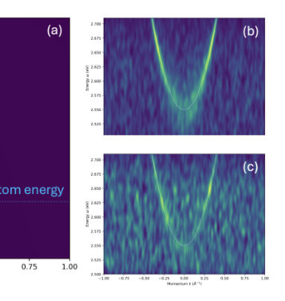
<figcaption class="paper-figure-caption"><b>Fig 1.</b> Figure 1: Sample spectral function A(k, ω) from the bottom of a band, from which we may draw three tiers of questions (Section 2.3). Increasing noise levels are shown: (a) 0%, (b) 10%, (c) 40%.</figcaption>
</figure>
<figure class="paper-figure-card">
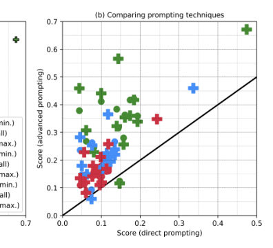
<figcaption class="paper-figure-caption"><b>Fig 2.</b> Figure 2: (a) More recently released, closed–weight (proprietary) models generally perform better. Models with asterisks (*) are open–weight. Note expanded axes scaling, which top out at 1. Min./max. refer to spectra with minimum and maximum noise or convolution. (b) Advanced prompting improved scores, particularly for questions with minimal noise and convolution (min.), but gains were marginal when experimental complications were severe (max.). A solid black line denotes identical scores under direct query and advanced prompting. The legend applies to both subfigures.</figcaption>
</figure>
<figure class="paper-figure-card">
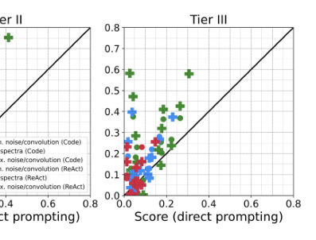
<figcaption class="paper-figure-caption"><b>Fig 3.</b> Figure 3: Advanced prompting improved scores slightly for Tier I and Tier III questions, and vastly for Tier II. However, questions with maximal noise or convolution (red) were still poorly tackled.</figcaption>
</figure>
<figure class="paper-figure-card">
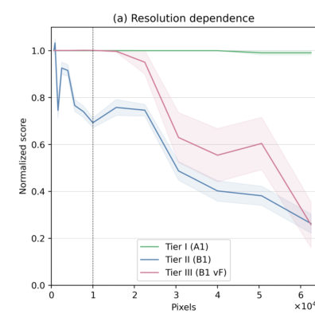
<figcaption class="paper-figure-caption"><b>Fig 4.</b> Figure 4: (a) Higher resolution (more pixels/token count) typically worsened scores. Three examples are shown, representing the three tiers of questions. A vertical dashed line at 1002 pixels indicates the resolution at which the standard evaluation is carried out in Fig. 2. Shaded areas indicate error in the mean score (standard error) σx = σx/√n, for score x, sample standard deviation σx, and sample size n. (b) Maintaining the same color scheme, exponential decay of score with resolution (beyond 1002 pixels) is shown across categories, highlighting the differences between tiers of questions.</figcaption>
</figure>
<figure class="paper-figure-card">
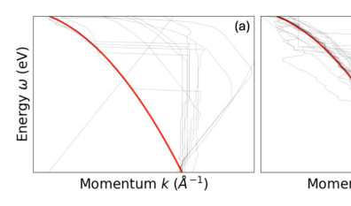
<figcaption class="paper-figure-caption"><b>Fig 5.</b> Figure 5: Unexpected improvement and subsequent expected decline in accuracy of answers with increasing noise; ground truth in red. Noise levels are set at (a) 0%, (b) 10%, and (c) 40% of maximum dispersion intensity, for a quadratic dispersion (question category B2).</figcaption>
</figure>
</div>

<p><strong>Summary.</strong> This work introduces CME-SpectrumBench, a benchmark designed to test LLMs on analyzing complex, noisy spectral data from condensed matter experiments. The study finds that while frontier models struggle to interpret raw data directly, their performance dramatically improves when they can use code interpreters to perform the necessary data processing steps. This highlights a key limitation: LLMs are currently better suited as code-interfacing assistants rather than direct data analysts.</p>
<p><strong>Why it may be interesting.</strong> While the focus is on AI benchmarking, the underlying physics problem—extracting fundamental parameters from noisy, complex spectral data—is highly relevant to any theoretical or experimental work in strongly correlated electron systems.</p>
<details>
<summary>Detailed structure</summary>
<p><strong>Main problem.</strong> The paper evaluates the ability of Large Language Models (LLMs) to perform complex data analysis on research-level spectral data from condensed matter experiments.</p>
<p><strong>Main result.</strong> LLMs struggle significantly when asked to analyze spectral data directly from large, noisy inputs, but their performance improves substantially when the task is framed as an agentic code generation problem requiring tool use.</p>
<p><strong>Method.</strong> A benchmark called CME-SpectrumBench, containing 190 questions, was designed using simulated spectral data from condensed matter experiments (CME). Models are scored on their ability to numerically extract physical parameters from 2D intensity arrays.</p>
<p><strong>Model / system.</strong> The physical domain is Condensed Matter Physics, specifically analyzing spectral data from techniques like ARPES and RIXS. The underlying physics involves solving an inverse problem to extract dispersion $\epsilon(k)$ and line width $\Sigma''(\omega)$ from a measured spectrum $A(k, \omega)$.</p>
<p><strong>Key observables.</strong> Dispersion curves $\epsilon(k)$ and line widths $\Sigma''(\omega)$; the measured spectral data $A(k, \omega)$ are 2D intensity maps.</p>
<p><strong>Important parameters / regimes.</strong> Noise levels (e.g., 10%, 40%) and instrumental convolution levels are key parameters used to increase the difficulty of the analysis.</p>
<p><strong>Assumptions / limitations.</strong> The core assumption is that LLMs, when provided with code execution tools, can be effectively mapped to act as research assistants capable of solving complex scientific inverse problems.</p>
<p><strong>Figures summary.</strong> Figures illustrate sample spectral functions showing the effect of increasing noise on the spectrum, and another figure compares model performance gains when advanced prompting or tool use is enabled.</p>
<p><strong>Paper structure.</strong> The paper introduces the gap in current LLM benchmarks (lack of data analysis tests), presents the CME-SpectrumBench, details the methodology of spectral analysis (inverse problem), reports performance gains achieved through tool use, and concludes with the limitations of direct data processing by LLMs.</p>
</details>
<details>
<summary>Abstract</summary>
<p>Large Language Models (LLMs) are presently well assessed by expert-level mathematics and physics benchmarks which focus on theoretical, symbolic reasoning. However, we lack experimental benchmarks that evaluate data analysis in frontier research problems, a capability that future domain-specific foundation models must have. To this end, we present CME-SpectrumBench, an expert-designed benchmark consisting of 190 questions that measures how reliably frontier LLMs analyze research-level spectral scientific data in condensed matter experiments (CME). Using simulated CME spectral data, we prompt models to identify structures from 2D intensity arrays in the face of noise and limited instrumental resolution, a test of dense context reasoning. Models are scored by how accurately their numerical answers approach the ground truth. Under direct query, scores generally pale in comparison to handwritten code due to clear failure modes: models can find simple features but struggle to trace patterns or compute derived quantities, and performance typically degrades with increased data resolution and noise/convolution levels. LLM performance becomes comparable to handwritten code by allowing tool use (access to a Python interpreter) with/without ReAct prompting, in effect mapping questions onto agentic code generation problems. Our findings show that frontier models can serve as research assistants by interfacing with data through code, but still face difficulties processing information directly from large datasets - a key barrier future foundation models must overcome. The code and data are publicly available at https://huggingface.co/datasets/jingene/CMESpectrumBench.</p>
</details>
<p><sub><a href="#top">↑ back to top</a></sub></p>

<p><a id="paper-2610.25609"></a></p>
<h3 id="engineering-topological-phenomena-via-field-driven-weyl-motion"><a href="http://arxiv.org/abs/2610.25609v1">Engineering topological phenomena via field-driven Weyl motion</a></h3>
<p><strong>Authors:</strong> Jeonghoon Shin, Taekoo Oh<br>
<strong>Type:</strong> theory · <strong>Category:</strong> strongly correlated electrons · <strong>PDF:</strong> <a href="https://arxiv.org/pdf/2610.25609v1">https://arxiv.org/pdf/2610.25609v1</a><br>
<strong>Analysis basis:</strong> full PDF text, analyzed in chunks
<strong>Topic relevance:</strong> <code>Keldysh / 2PI / non-Gaussian methods</code> <strong>1/5</strong> · <code>analog quantum simulation</code> <strong>1/5</strong></p>
<div class="figure-strip-hint">↔ Scroll figures horizontally</div>
<div class="paper-figures-scroll">
<figure class="paper-figure-card">
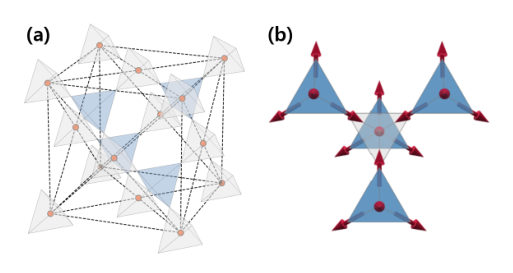
<figcaption class="paper-figure-caption"><b>Fig 1.</b> FIG. 1. The basic structure of pyrochlore iridates. (a) The conventional unit cell of pyrochlore iridates. (b) The all- in-all-out magnetic ordering of pyrochlore iridates.</figcaption>
</figure>
<figure class="paper-figure-card">
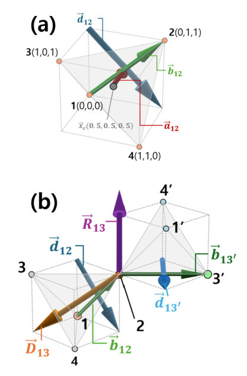
<figcaption class="paper-figure-caption"><b>Fig 2.</b> FIG. 2. The parameters used in the model of pyrochlore lattice. (a) The nearest neighbor vectors b12, d12, a12 used in Eq. 1 are shown. (b) The next nearest neighbor vectors R13, D13 used in Eq. 1 are shown.</figcaption>
</figure>
<figure class="paper-figure-card">
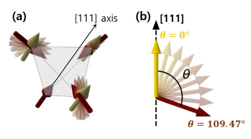
<figcaption class="paper-figure-caption"><b>Fig 3.</b> FIG. 3. The assumption on the effect of magnetic field. (a) When a magnetic field is applied to [111] direction, we assume that the spins gradually rotate from AIAO to FM state. As one spin is already parallel to [111], other three spins rotate toward [111] direction. (b) The initial position of three spins are represented by the rotation angle θ = 109.47◦</figcaption>
</figure>
<figure class="paper-figure-card">
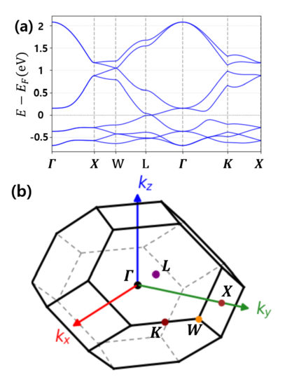
<figcaption class="paper-figure-caption"><b>Fig 4.</b> FIG. 4. Weyl semimetal phase of pyrochlore iridates at AIAO state. (a) The band structure in the condition U = 1.485, tσ = −0.8, m = 0.35 at θ = 109.47◦. This is a WSM with four pairs of Weyl nodes, which reside at the Γ −L line. (b) The first Brillouin zone of pyrochlore lattice (fcc).</figcaption>
</figure>
<figure class="paper-figure-card">
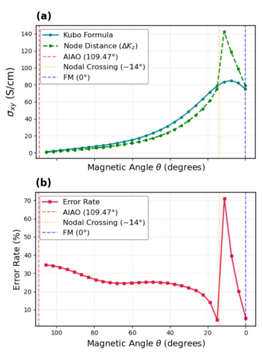
<figcaption class="paper-figure-caption"><b>Fig 5.</b> FIG. 5. The computed AHC as a function of the spin rotation angle θ. (a) The comparation between the Kubo formula with node distance method. The blue solid line is obtained by the Kubo formula, while the green dotted line is computed by the Weyl node separation. (b) The error rate of AHC between σKubo xy and σnode xy at each θ. The red solid line is the error rate calculated by formula (σKubo xy - σnode xy )/σKubo xy ×100 %. Yellow vertical dotted line at θc ≈14◦</figcaption>
</figure>
</div>

<p><strong>Summary.</strong> This work theoretically models how changing the magnetic order in pyrochlore iridates drives topological phenomena, specifically the motion of Weyl nodes. By comparing the Kubo formula to geometric node separation, the authors demonstrate that the resulting anomalous Hall conductivity is fundamentally controlled by these momentum-space monopoles. This provides a quantitative framework for predicting transport properties in strongly correlated topological insulators.</p>
<p><strong>Why it may be interesting.</strong> The explicit connection drawn between the Berry curvature flux (a topological invariant) and measurable transport coefficients like AHC provides a powerful theoretical framework for understanding topological materials, which is relevant to understanding exotic quantum states in correlated systems.</p>
<details>
<summary>Detailed structure</summary>
<p><strong>Main problem.</strong> The paper investigates how the anomalous Hall conductivity (AHC) in topological materials is engineered by the field-driven motion of Weyl nodes in momentum space.</p>
<p><strong>Main result.</strong> The computed intrinsic AHC exhibits non-monotonic behavior and shows an order-of-magnitude agreement with experiments, confirming that Weyl node dynamics fundamentally drive the transport properties.</p>
<p><strong>Method.</strong> The authors compare two theoretical calculations for AHC—the full multi-band Kubo formula and the geometric Weyl node separation—by tracking node movement as the magnetic state changes.</p>
<p><strong>Model / system.</strong> The system studied is pyrochlore iridates, modeled using a microscopic Hubbard Hamiltonian that is treated within a mean-field approximation. The magnetic state is varied by simulating the spin rotation from an antiferromagnetic (AIAO) to a ferromagnetic (FM) state under an external magnetic field.</p>
<p><strong>Key observables.</strong> Anomalous Hall Conductivity (AHC), Weyl node positions, Berry curvature flux, and the discrepancy between Kubo and node-separation calculations.</p>
<p><strong>Important parameters / regimes.</strong> The magnetic canting angle $\theta$ (ranging from $109.47^\circ$ to $0^\circ$), the external magnetic field direction ([111]), and the critical angle $\theta_c \approx 14^\circ$.</p>
<p><strong>Assumptions / limitations.</strong> The analysis relies on the Hartree-Fock mean-field approximation for the Hubbard interaction and assumes the magnitude of local moments remains fixed during spin rotation.</p>
<p><strong>Figures summary.</strong> Figures illustrate the crystal structure, the Hamiltonian components (hopping terms), the spin rotation path, and the band structure evolution, highlighting the Weyl nodes in k-space.</p>
<p><strong>Paper structure.</strong> The paper builds the Hamiltonian using a tight-binding model incorporating hopping terms and a mean-field magnetic exchange term. It then calculates AHC using both the Kubo formula and the geometric node separation method, analyzing the resulting dependence on the magnetic canting angle $\theta$.</p>
</details>
<details>
<summary>Abstract</summary>
<p>We illustrate the field-driven anomalous Hall engineering via the momentum-space motion of Weyl nodes using pyrochlore iridates under a [111] magnetic field as an example. We model the system with a well-established microscopic Hamiltonian and the field effect with the spin rotation from the all-in-all-out to the ferromagnetic state. Tracking the position of Weyl nodes during the spin rotation, we demonstrate macroscopic anomalous Hall conductivity variations are fundamentally driven by Weyl node motions by comparing the full multi-band Kubo formula with the geometric Weyl node separation. The discrepancy occurs only near a critical spin rotation angle, where several Weyl nodes come into close proximity. We reveal that the evolution of anomalous Hall conductivity under the magnetic field agrees with reported experiments in an order-of-magnitude and non-monotonicity. These results elucidate the field-driven dynamics of momentum-space monopoles and provide a framework for understanding transport in strongly correlated topological materials.</p>
</details>
<p><sub><a href="#top">↑ back to top</a></sub></p>

<p><a id="paper-2610.26838"></a></p>
<h3 id="field-theory-guides-monte-carlo-in-the-one-dimensional-long-range-ising-model"><a href="http://arxiv.org/abs/2610.26838v1">Field theory guides Monte Carlo in the one-dimensional long-range Ising model</a></h3>
<p><strong>Authors:</strong> António Antunes, José Matos<br>
<strong>Type:</strong> both · <strong>Category:</strong> statistical mechanics · <strong>PDF:</strong> <a href="https://arxiv.org/pdf/2610.26838v1">https://arxiv.org/pdf/2610.26838v1</a><br>
<strong>Analysis basis:</strong> full PDF text, analyzed in chunks
<strong>Topic relevance:</strong> <code>Keldysh / 2PI / non-Gaussian methods</code> <strong>1/5</strong> · <code>methods for driven-dissipative</code> <strong>1/5</strong></p>
<div class="figure-strip-hint">↔ Scroll figures horizontally</div>
<div class="paper-figures-scroll">
<figure class="paper-figure-card">
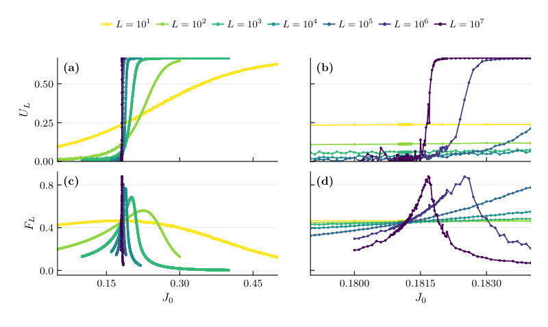
<figcaption class="paper-figure-caption"><b>Fig 1.</b> Figure 1: Finite-size behavior at s = 0.4. (a) Binder cumulant UL; (b) rescaled lowest- momentum correlator FL = L−s eG(2π/L). Lines join measured points, to guide the eye. Left) Wide range; Right) Zoom-in on the critical region</figcaption>
</figure>
<figure class="paper-figure-card">
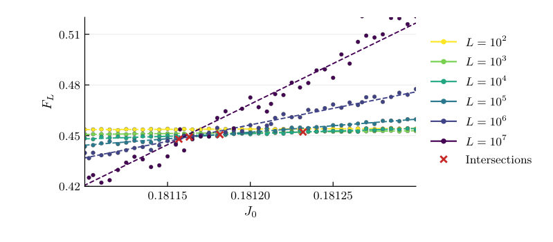
<figcaption class="paper-figure-caption"><b>Fig 2.</b> Figure 2: Further zoom of fig. 1 in the critical region. Red crosses mark intersections of fits at consecutive lattice sizes. Dashed curves are linear fits over 0.1810 ≤J0 ≤0.1813.</figcaption>
</figure>
<figure class="paper-figure-card">
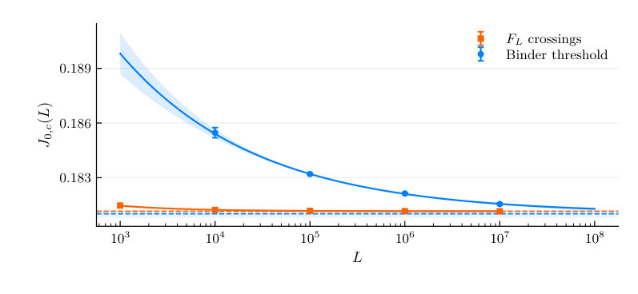
<figcaption class="paper-figure-caption"><b>Fig 3.</b> Figure 3: Finite-size critical-coupling estimates at s = 0.4 from the Binder threshold (blue circles) and consecutive-size crossings of FL (orange squares). The x-axis coordinate is the larger size in each pair. Solid curves fit J0,c(L) = J0,c + AL−p and dashed lines represent the extrapolated values. One-standard-error uncertainties are represented by bands.</figcaption>
</figure>
<figure class="paper-figure-card">
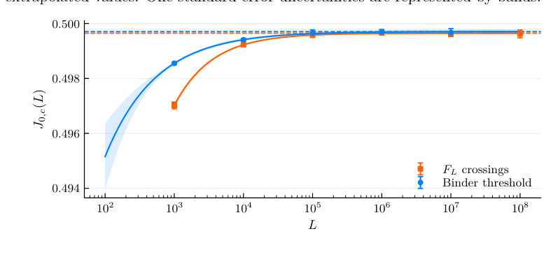
<figcaption class="paper-figure-caption"><b>Fig 4.</b> Figure 4: Same as fig. 3, but for s = 0.9, where the fixed-point in non-Gaussian and the Binder cumulant provides a more stable estimate of the critical coupling.</figcaption>
</figure>
<figure class="paper-figure-card">
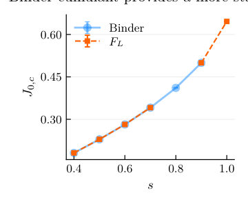
<figcaption class="paper-figure-caption"><b>Fig 5.</b> Figure 5: Critical couplings and exponents from the Binder and rescaled-propagator crossings. The table shows the numbers plotted. Missing entries indicate unavailable or unreliable estimates. The values compare well with [28]. The estimates of Mart´ınez- Herrera, Rodr´ıguez-L´opez, and Sol´ıs [43], obtained through finite-range transfer-matrix extrapolation, provide an independent consistency check, although with substantially larger uncertainties. – 11 –</figcaption>
</figure>
</div>

<p><strong>Summary.</strong> This work investigates the one-dimensional long-range Ising model, treating it as a testbed for non-perturbative Conformal Field Theory methods. By employing sophisticated Monte Carlo simulations, the authors estimate critical exponents and correlation functions. The results demonstrate the utility of these numerical tools for analyzing complex, strongly coupled quantum many-body systems.</p>
<p><strong>Why it may be interesting.</strong> The application of advanced numerical techniques (MC) to study critical phenomena in a solvable, yet complex, CFT model provides a valuable benchmark for developing and testing non-perturbative methods applicable to strongly coupled quantum systems.</p>
<details>
<summary>Detailed structure</summary>
<p><strong>Main problem.</strong> The paper revisits the Monte Carlo approach to the one-dimensional long-range Ising (LRI) model to estimate scaling dimensions and correlation functions, using it as a testbed for non-perturbative methods in strongly coupled CFTs.</p>
<p><strong>Main result.</strong> The LRI model is shown to be an ideal playground for testing non-perturbative CFT methods, yielding specific estimates for scaling dimensions ($\Delta\phi_2, \Delta\phi_4$) and OPE coefficients through numerical simulations.</p>
<p><strong>Method.</strong> The study combines field theory analysis (CFT, AdS/CFT correspondence) with advanced numerical techniques, primarily Monte Carlo simulations using optimized algorithms like the Fukui-Todo method.</p>
<p><strong>Model / system.</strong> The system is the one-dimensional long-range Ising (LRI) model, described by a Hamiltonian involving interactions decaying with distance $d(i, j)^{1+s}$. The continuum limit is governed by a Gaussian Free Field (GFF) action.</p>
<p><strong>Key observables.</strong> Scaling dimensions of operators ($\Delta\phi_2, \Delta\phi_4$), three-point and four-point functions, the critical coupling constant ($J_{0,c}$), and the Binder cumulant ($U_L$).</p>
<p><strong>Important parameters / regimes.</strong> The long-range decay exponent ($s$), the coupling constant ($J_0$), and the system size ($L$).</p>
<p><strong>Assumptions / limitations.</strong> The analysis relies on comparing results from various estimators and assuming that the system can be mapped to a CFT framework, though systematic uncertainties remain a limitation.</p>
<p><strong>Figures summary.</strong> Figures show finite-size scaling of the Binder cumulant ($U_L$) and rescaled propagators ($F_L$) to estimate critical couplings ($J_{0,c}$) for various $s$. Other figures compare calculated scaling dimensions and OPE coefficients across different $s$ values.</p>
<p><strong>Paper structure.</strong> The paper first establishes the theoretical framework using CFT and AdS/CFT for the LRI model. It then details the numerical implementation using efficient MC algorithms to calculate observables like scaling dimensions and correlation functions, culminating in comparisons across different coupling regimes ($s$).</p>
</details>
<details>
<summary>Abstract</summary>
<p>The statistical long-range Ising (LRI) model in one dimension provides a family of some of the simplest non-exactly solvable critical points. These critical points are described by long-range conformal field theories (CFTs) that are well understood analytically with perturbative expansions and some exact results. Guided by this, we revisit the Monte Carlo (MC) approach to the corresponding lattice model which has many favorable features compared to other systems studied with MC methods. In particular, with very modest computational cost, we are able to estimate scaling dimensions of leading and subleading operators as well as the associated three-point functions, and even certain four-point functions. These results help highlight the fact that 1d LRI CFTs are a phenomenal playground to more generally test non-perturbative methods and ideas for strongly coupled CFTs.</p>
</details>
<p><sub><a href="#top">↑ back to top</a></sub></p>

<p><a id="paper-2610.26052"></a></p>
<h3 id="hyq-lc-improving-light-curve-classification-with-hybrid-quantum-classical-learning"><a href="http://arxiv.org/abs/2610.26052v1">HyQ-LC: Improving Light-Curve Classification with Hybrid Quantum--Classical Learning</a></h3>
<p><strong>Authors:</strong> Xinghang Yu, Bin Yang<br>
<strong>Type:</strong> theory · <strong>Category:</strong> disordered systems and neural networks · <strong>PDF:</strong> <a href="https://arxiv.org/pdf/2610.26052v1">https://arxiv.org/pdf/2610.26052v1</a><br>
<strong>Analysis basis:</strong> full PDF text, analyzed in chunks
<strong>Topic relevance:</strong> <code>methods for driven-dissipative</code> <strong>1/5</strong> · <code>quantum measurements</code> <strong>1/5</strong></p>
<div class="figure-strip-hint">↔ Scroll figures horizontally</div>
<div class="paper-figures-scroll">
<figure class="paper-figure-card">
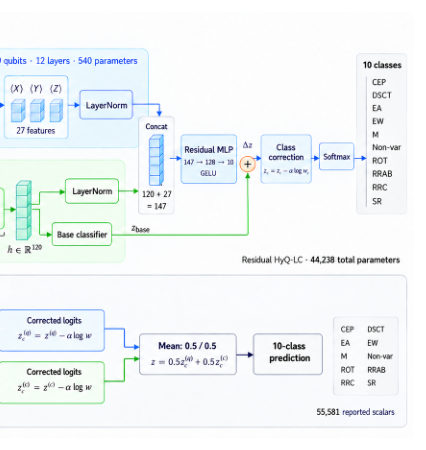
<figcaption class="paper-figure-caption"><b>Fig 1.</b> Figure 1: HyQ-LC model overview. (a) The main model combines a 120-dimensional Window MLP representation with 27 features from a global nine-qubit readout. Separately normalised features enter a 147→128→10 residual MLP, whose logits are added to the backbone prediction before class-weight correction. (b) The separate fixed-fusion configuration averages the corrected logits of independently trained token-wise quantum and Window MLP classifiers. Its 55,581-scalar budget includes one fixed mixing coefficient. Light curves are schematic illustrations, not measured examples; the tokens group feature entries rather than time samples.</figcaption>
</figure>
<figure class="paper-figure-card">
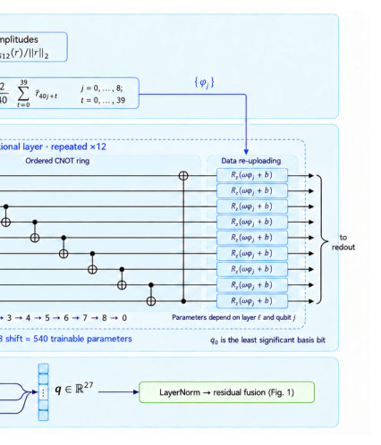
<figcaption class="paper-figure-caption"><b>Fig 2.</b> Figure 2: Nine-qubit readout in the residual HyQ-LC model. (a) The bounded input supplies 512 normalised amplitudes and nine grouped angles. The amplitude formula shown applies to nonzero inputs; Eq. (2) specifies the zero-norm fallback. (b) State preparation is performed once. Each of twelve layers applies trainable Rz–Ry–Rz rotations, the ordered CNOT ring 0 →1, . . . , 7 →8, 8 →0, and angle re-uploading. The 324 rotation, 108 frequency, and 108 shift parameters sum to 540; qubit zero is the least significant basis bit. (c) Nine expectations for each of X, Y , and Z form the 27- dimensional output. All expectations are computed by classical state-vector simulation.</figcaption>
</figure>
</div>

<p><strong>Summary.</strong> This paper proposes HyQ-LC, a hybrid quantum-classical neural network, to enhance the classification of stellar light curves using engineered features. The model integrates a classical MLP with a quantum readout circuit, demonstrating measurable performance gains over pure classical counterparts. However, the authors caution that the full benefit over state-of-the-art classical methods like LightGBM is not definitively proven.</p>
<p><strong>Why it may be interesting.</strong> While the application is astrophysics, the core methodology involves integrating quantum circuits (readout) into a deep learning framework for feature processing, which is relevant to quantum machine learning applied to complex data structures.</p>
<details>
<summary>Detailed structure</summary>
<p><strong>Main problem.</strong> The paper aims to improve the classification of stellar variability from light curves, a task crucial for large-scale time-domain astronomical surveys.</p>
<p><strong>Main result.</strong> The hybrid quantum-classical model (HyQ-LC) showed point-estimate gains in Macro-F1 over the pure MLP control, although the full-budget LightGBM reference generally scored higher on key metrics.</p>
<p><strong>Method.</strong> The authors developed a hybrid model combining a classical MLP backbone with a quantum readout circuit utilizing amplitude encoding and angle re-uploading.</p>
<p><strong>Model / system.</strong> The system analyzes stellar light curves using 359 handcrafted features. The model architecture involves a window MLP processing these features, which then feeds into a nine-qubit readout circuit for classification.</p>
<p><strong>Key observables.</strong> Macro-averaged F1 (Macro-F1) and Accuracy (ACC) on a 20,000-object test set.</p>
<p><strong>Important parameters / regimes.</strong> The model has approximately 44,238 trainable parameters; the quantum readout uses a 12-layer circuit with 540 trainable parameters.</p>
<p><strong>Assumptions / limitations.</strong> All quantum circuits are simulated classically, and the specific contribution of the quantum branch remains unresolved due to architectural overlaps with classical controls.</p>
<p><strong>Figures summary.</strong> The figures detail the model overview (MLP backbone + 9-qubit readout), the quantum encoding/circuit structure, and comparisons across various control configurations (MLP, fixed fusion, LightGBM).</p>
<p><strong>Paper structure.</strong> The paper introduces the problem, details the hybrid quantum-classical architecture (encoding, readout circuit, fusion), compares its performance against parameter-matched and full-budget classical baselines (MLP, LightGBM), and analyzes class-specific gains.</p>
</details>
<details>
<summary>Abstract</summary>
<p>Light curves reveal stellar variability and support studies of stellar evolution and cosmic distances. Reliable classification is therefore important for large time-domain surveys. We present HyQ-LC for ten-class stellar light-curve classification using 359 handcrafted features and 633,034 training objects. The main model combines a window multilayer perceptron (MLP) backbone with a nine-qubit readout using amplitude encoding and angle re-uploading. Both this hybrid and its pure-MLP control have 44,238 parameters. On a shared 20,000-object test set, the hybrid has macro-averaged F1 (Macro-F1) point gains of 0.8276 and 1.2393 percentage points over the pure MLP on two fine-tuning seeds. A separate fixed-fusion configuration achieves slightly higher Macro-F1 but lower accuracy than approximately budget-matched LightGBM. Its positive class-level differences are concentrated in CEP, RRC, and ROT, while the full-budget LightGBM reference scores higher on both metrics. All circuits are simulated classically. The comparisons retain existing validation-selected checkpoints and use the same test objects, with features, predictions, and recomputation code publicly available. The results identify point-estimate improvements over the tested controls while leaving the specific contribution of the quantum branch unresolved.</p>
</details>
<p><sub><a href="#top">↑ back to top</a></sub></p>

<p><a id="paper-2610.26012"></a></p>
<h3 id="methods-of-density-functional-theory-in-one-dimension"><a href="http://arxiv.org/abs/2610.26012v1">Methods of density functional theory in one dimension</a></h3>
<p><strong>Authors:</strong> Thomas E. Baker, Kasey Chen<br>
<strong>Type:</strong> theory · <strong>Category:</strong> strongly correlated electrons · <strong>PDF:</strong> <a href="https://arxiv.org/pdf/2610.26012v1">https://arxiv.org/pdf/2610.26012v1</a><br>
<strong>Analysis basis:</strong> full PDF text, analyzed in chunks
<strong>Topic relevance:</strong> <code>analog quantum simulation</code> <strong>1/5</strong> · <code>methods for driven-dissipative</code> <strong>1/5</strong></p>
<div class="figure-strip-hint">↔ Scroll figures horizontally</div>
<div class="paper-figures-scroll">
<figure class="paper-figure-card">
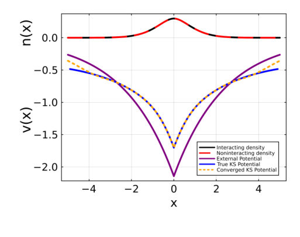
<figcaption class="paper-figure-caption"><b>Fig 1.</b> FIG. 1. For a given external potential v(x), the exact den- sity for the interacting problem is determined with DMRG. From that density, a gradient-based method can be used to determine the exact Kohn-Sham (KS) potential, vs(x). This compares favourably with the exact Kohn-Sham potential de- termined for the 2-electron system presented here with more details in the text. The densities are divided by the grid spacing, ∆= 0.1. We start from the external potential for the starting guess for vs(x) since we notice in this case some useful features for this case as explained in the text.</figcaption>
</figure>
<figure class="paper-figure-card">
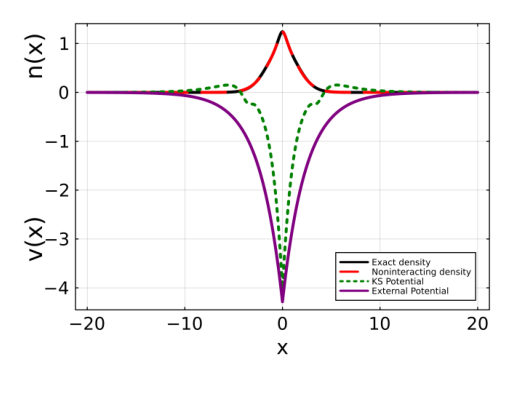
<figcaption class="paper-figure-caption"><b>Fig 2.</b> FIG. 2. A comparsion of the exact computation from DMRG with the LDA from Ref. 19 with ∆= 1/32.</figcaption>
</figure>
<figure class="paper-figure-card">
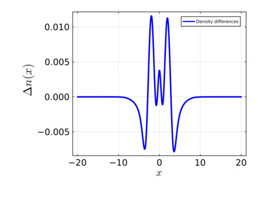
<figcaption class="paper-figure-caption"><b>Fig 3.</b> FIG. 3. Density differences between the exact and LDA com- putations from Fig. 2.</figcaption>
</figure>
</div>

<p><strong>Summary.</strong> This paper details the numerical and theoretical methods for applying Density Functional Theory to one-dimensional quantum systems. By simplifying the dimensionality, the authors develop efficient computational strategies for calculating key energy components, particularly focusing on the exchange and correlation energies within the LDA framework. This work is crucial for advancing the understanding of strongly correlated electron behavior in low dimensions.</p>
<p><strong>Why it may be interesting.</strong> The rigorous application of DFT methods, especially the focus on 1D systems and the use of advanced numerical techniques like DMRG, provides a valuable theoretical benchmark for understanding correlation effects in low-dimensional quantum matter.</p>
<details>
<summary>Detailed structure</summary>
<p><strong>Main problem.</strong> The paper discusses developing efficient numerical strategies to evaluate Density Functional Theory (DFT) computations for Kohn-Sham systems, specifically focusing on the one-dimensional case to gain insight into the general theory.</p>
<p><strong>Main result.</strong> The 1D reduction allows for the study of exact functional relationships in DFT, and the use of an exponential interaction proves highly efficient for advanced numerical methods like DMRG.</p>
<p><strong>Method.</strong> The authors employ the Kohn-Sham formalism, utilizing techniques like Fast Fourier Transforms (FFT) for calculating Hartree energy and applying the Density Matrix Renormalization Group (DMRG) for solving the interacting system.</p>
<p><strong>Model / system.</strong> The study focuses on quantum systems modeled by DFT, simplified to one dimension. The Hamiltonian includes kinetic, external, and electron-electron interaction terms, with various soft-Coulomb or exponential interactions considered.</p>
<p><strong>Key observables.</strong> One-body density $\rho(r)$, total energy components ($T[n], U[n], E_x[n], E_c[n]$), and the Kohn-Sham potential $\text{vs}[n](x)$.</p>
<p><strong>Important parameters / regimes.</strong> The dimensionality (1D), the interaction potential form (e.g., exponential decay $\exp(-\lambda|x-x'|)$), and density regimes (low- and high-density limits).</p>
<p><strong>Assumptions / limitations.</strong> The primary assumptions involve restricting the problem to 1D and employing the Local Density Approximation (LDA) when calculating exchange and correlation energies.</p>
<p><strong>Figures summary.</strong> Not specified.</p>
<p><strong>Paper structure.</strong> The paper progresses from the general DFT framework to the 1D simplification, details the computational implementation of energy components (Hartree, Exchange, Correlation), and concludes by analyzing the asymptotic limits of the exchange energy.</p>
</details>
<details>
<summary>Abstract</summary>
<p>Density functional theory is formally justified by an existence proof. As such, the need for computational methods to study the theory is a useful route to understanding the full theory. In this paper, we discuss the numerical strategies to efficiently evaluate computations for Kohn-Sham systems in one dimension and also methods for determining exact properties, including time-dependence. An accompanying library is also available for computing one-dimensional density functional theory and publicly available. The expressions used to implement the density functional in one-dimension are surveyed. An alternative justification for a gradient-based technique is also shown that can be applied to time-dependent evolution of the exact Kohn-Sham potential.</p>
</details>
<p><sub><a href="#top">↑ back to top</a></sub></p>

<p><a id="paper-2610.26725"></a></p>
<h3 id="quantum-optimal-control-primer"><a href="http://arxiv.org/abs/2610.26725v1">Quantum Optimal Control Primer</a></h3>
<p><strong>Authors:</strong> Ignacio R. Sola<br>
<strong>Type:</strong> theory · <strong>Category:</strong> other · <strong>PDF:</strong> <a href="https://arxiv.org/pdf/2610.26725v1">https://arxiv.org/pdf/2610.26725v1</a><br>
<strong>Analysis basis:</strong> full PDF text, analyzed in chunks
<strong>Topic relevance:</strong> <code>Keldysh / 2PI / non-Gaussian methods</code> <strong>1/5</strong> · <code>quantum measurements</code> <strong>1/5</strong></p>
<div class="figure-strip-hint">↔ Scroll figures horizontally</div>
<div class="paper-figures-scroll">
<figure class="paper-figure-card">
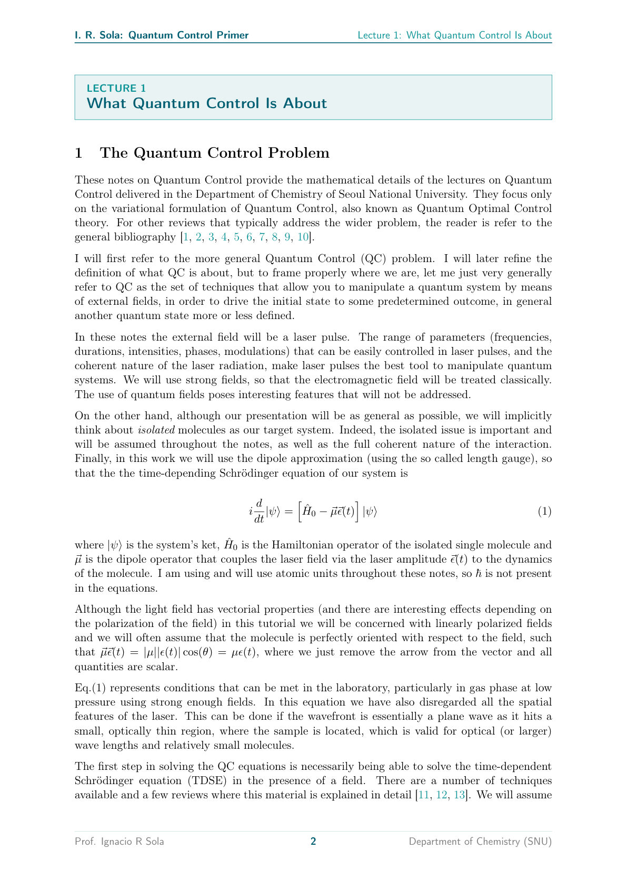
<figcaption class="paper-figure-caption"><b>Fig 1.</b> Low-resolution page preview, page 2</figcaption>
</figure>
<figure class="paper-figure-card">
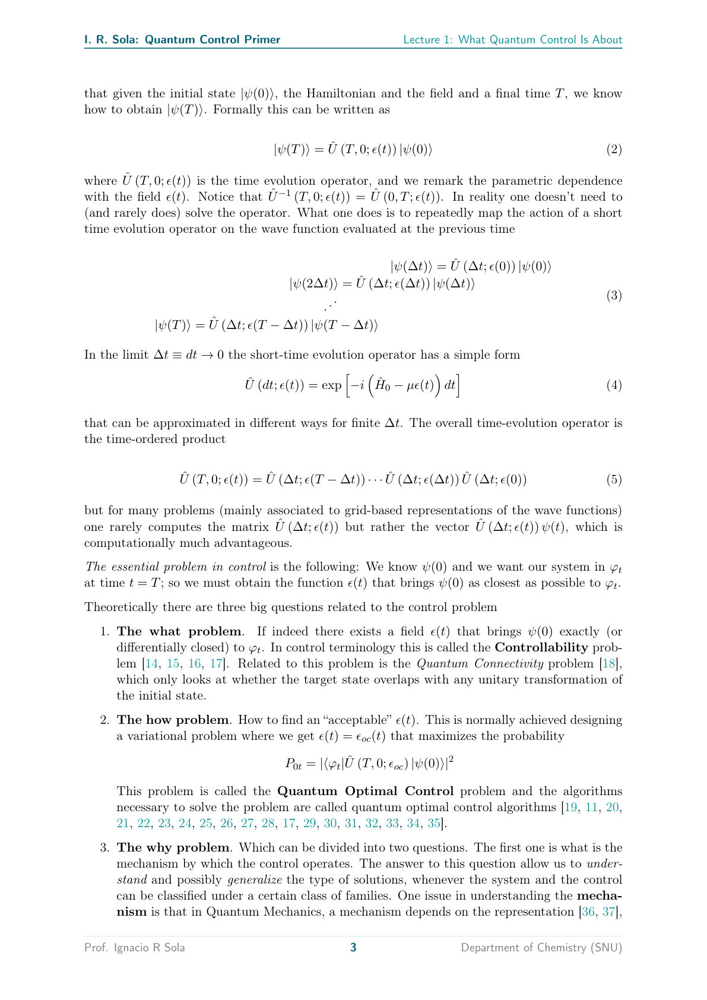
<figcaption class="paper-figure-caption"><b>Fig 2.</b> Low-resolution page preview, page 3</figcaption>
</figure>
<figure class="paper-figure-card">
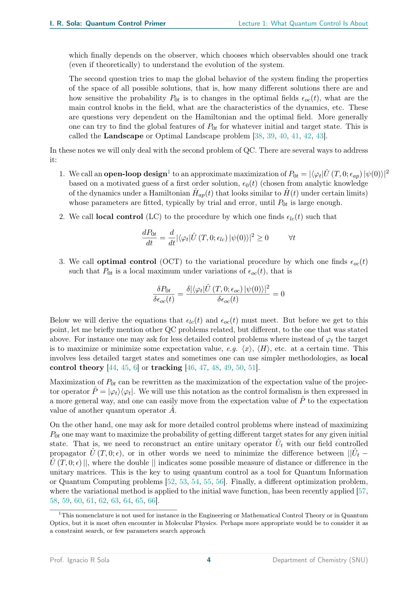
<figcaption class="paper-figure-caption"><b>Fig 3.</b> Low-resolution page preview, page 4</figcaption>
</figure>
<figure class="paper-figure-card">
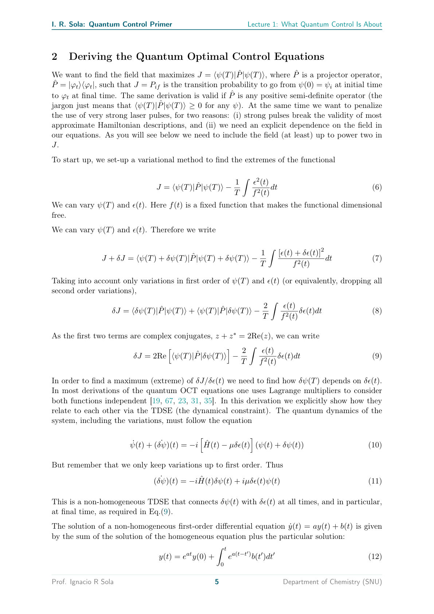
<figcaption class="paper-figure-caption"><b>Fig 4.</b> Low-resolution page preview, page 5</figcaption>
</figure>
<figure class="paper-figure-card">

<figcaption class="paper-figure-caption"><b>Fig 5.</b> Low-resolution page preview, page 6</figcaption>
</figure>
</div>

<p><strong>Summary.</strong> This paper serves as a detailed theoretical primer on Quantum Optimal Control (QOC), outlining the mathematical framework for steering quantum systems to target states using external fields. It rigorously derives the necessary conditions for optimality and systematically compares several advanced, convergent numerical algorithms (like Krotov and fast-kick-off) required to solve the resulting complex, nonlinear equations.</p>
<p><strong>Why it may be interesting.</strong> This work provides a comprehensive, advanced theoretical toolkit for manipulating quantum systems using external fields, which is central to quantum optics and molecular control studies.</p>
<details>
<summary>Detailed structure</summary>
<p><strong>Main problem.</strong> The core problem is finding the time-dependent external field $\epsilon(t)$ that drives an initial quantum state $|\psi(0)
angle$ to a desired target state $|\phi_t
angle$ with maximum probability.</p>
<p><strong>Main result.</strong> The optimal control field $\epsilon_{oc}(t)$ is determined by solving the variational condition $\delta J / \delta \epsilon(t) = 0$, leading to complex, nonlinear equations requiring iterative solvers.</p>
<p><strong>Method.</strong> The paper develops and compares several iterative algorithms, including gradient methods, Krotov-type schemes, and fast-kick-off algorithms, all rooted in variational calculus.</p>
<p><strong>Model / system.</strong> The system is modeled as an isolated molecule whose dynamics are governed by the time-dependent Schrödinger equation (TDSE) with a Hamiltonian $\hat{H}(t) = \hat{H}_0 - \mu\epsilon(t)$. The control is applied via an external classical field $\epsilon(t)$ acting through the dipole interaction.</p>
<p><strong>Key observables.</strong> The objective function $J = \langle\psi(T)|\hat{P}|\psi(T)
angle$ (transition probability), and the time evolution of observables $\langle \psi(t)|\hat{A}|\psi(t)
angle$.</p>
<p><strong>Important parameters / regimes.</strong> The control field parameters (frequencies, intensities, phases) and the convergence parameters for the iterative schemes ($\gamma, \eta$).</p>
<p><strong>Assumptions / limitations.</strong> The analysis relies on the dipole approximation and assumes the external field $\epsilon(t)$ can be treated classically. The derivation of algorithms often involves first-order variations.</p>
<p><strong>Paper structure.</strong> The structure moves from defining the general problem (QC) to deriving the variational condition for optimality, and finally comparing and detailing multiple advanced numerical algorithms (Gradient, Krotov, Fast-kick-off) to solve the resulting implicit equations.</p>
</details>
<details>
<summary>Abstract</summary>
<p>This is a set of detailed notes that are part of a Ph.D. Course on Quantum Control delivered at the Department of Chemistry of Seoul National University in 2014. Part of this course was also taught in the Department of Chemistry of the Friedrich Schiller University Jena. It focuses on quantum optimal control and quantum optimal control algorithms based on the gradient and extended gradient methods.</p>
</details>
<p><sub><a href="#top">↑ back to top</a></sub></p>

<p><a id="paper-2610.26833"></a></p>
<h3 id="supervised-learning-with-quantum-hamiltonian-embeddings"><a href="http://arxiv.org/abs/2610.26833v1">Supervised Learning with Quantum Hamiltonian Embeddings</a></h3>
<p><strong>Authors:</strong> Riccardo Molteni, Minjun Jeon, Paolo Braccia, Abhinav Deshpande, Vedran Dunjko, Liang Jiang, Su-un Lee, Swarnadeep Majumder, Javier Robledo Moreno, Parthasarathy Suryanarayanan, Kunal Sharma<br>
<strong>Type:</strong> both · <strong>Category:</strong> quantum information and computing · <strong>PDF:</strong> <a href="https://arxiv.org/pdf/2610.26833v1">https://arxiv.org/pdf/2610.26833v1</a><br>
<strong>Analysis basis:</strong> full PDF text, analyzed in chunks
<strong>Topic relevance:</strong> <code>analog quantum simulation</code> <strong>1/5</strong> · <code>quantum measurements</code> <strong>1/5</strong></p>
<div class="figure-strip-hint">↔ Scroll figures horizontally</div>
<div class="paper-figures-scroll">
<figure class="paper-figure-card">

<figcaption class="paper-figure-caption"><b>Fig 1.</b> Figure 1. a) Test accuracy versus system size for various methods on a binary classification problem from the Fashion-MNIST dataset. The methods are: best-performing classical baseline (gray), classical iterative solver (orange) used in HE framework, quantum kernel based on a product-state embedding (blue), 1-reduced density matrix (1-RDM) projected quantum kernel with the same embedding [HBM+21] (green), and the 1-RDM projected quantum kernel based on the E2 embedding of Ref. [HBM+21] (pink). b) Held-out test accuracy of the five runs with the highest validation accuracy at n = 50. In this plot, we additionally show the accuracy obtained by the HE model trained on hardware (yellow).</figcaption>
</figure>
<figure class="paper-figure-card">

<figcaption class="paper-figure-caption"><b>Fig 2.</b> Figure 2. Left: fidelity between the final exact learned ground state and its MPS approximation obtained by Schmidt truncation at maximum bond dimension χ, using the fixed qubit ordering of the simulation. Right: test accuracy obtained by replacing the exact learned state with the corresponding truncated MPS state.</figcaption>
</figure>
<figure class="paper-figure-card">

<figcaption class="paper-figure-caption"><b>Fig 3.</b> Figure 3. Test accuracy Aη as a function of bond dimension at system sizes n ∈{12, 24, 36, 48, 60}, averaged over 10 trials, with (a) η = 0.1, (b) η = 0.01. (c) Minimum energy seen during training as a function of bond dimension. (d) The signed margin y(x) U(x)†Z1U(x) .</figcaption>
</figure>
<figure class="paper-figure-card">

<figcaption class="paper-figure-caption"><b>Fig 4.</b> Figure 4. Accuracy of surrogate models. The green curve shows the surrogate that optimizes the mS,z from Eq. (G44), keeping cS,z(α) fixed by taking α = α∗obtained from the Hamiltonian embedding model. The orange curve optimizes over both mS,z and α (which determines cS,z(α)). Also shown in orange dots for comparison are the best (over bond dimensions χ) accuracies for the Hamiltonian embedding model for each trial.</figcaption>
</figure>
<figure class="paper-figure-card">

<figcaption class="paper-figure-caption"><b>Fig 5.</b> Figure 5. A comparison of the test accuracy from the Hamiltonian embedding model, when used in conjunction with a classical iterative solver (blue circles) and the SKQD method on hardware (orange squares) for the dataset of Fig. 1(b).</figcaption>
</figure>
</div>

<p><strong>Summary.</strong> This paper introduces Quantum Hamiltonian Embeddings, a supervised learning framework that maps classical data into a single, trainable quantum Hamiltonian. By optimizing this Hamiltonian's ground state, the model performs classification, offering theoretical guarantees and demonstrating computational advantages over classical algorithms. It establishes a practical path for implementing QML on near-term quantum hardware.</p>
<p><strong>Why it may be interesting.</strong> The focus on learning structure through Hamiltonian optimization provides a physical, variational approach to QML, which is highly relevant for researchers working on quantum simulation and characterizing complex quantum states.</p>
<details>
<summary>Detailed structure</summary>
<p><strong>Main problem.</strong> Developing a general quantum machine learning model that is efficiently trainable, provides generalization guarantees, and exhibits computational advantages over classical methods.</p>
<p><strong>Main result.</strong> The proposed framework, Quantum Hamiltonian Embeddings, successfully establishes a new, theoretically grounded paradigm for QML, demonstrating both its potential for realizing classically hard functions and its scalability on current quantum hardware.</p>
<p><strong>Method.</strong> The framework encodes a classical dataset into a single, parameterized effective Hamiltonian, whose ground state defines the classification rule. Training involves optimizing the Hamiltonian parameters by minimizing the ground-state energy.</p>
<p><strong>Model / system.</strong> The model operates on an n-qubit Hilbert space, using a data-dependent Hamiltonian $H_T(\alpha)$ derived from encoding unitaries $U(x, \alpha)$ and label operators $O(y)$. Inference is performed by approximating the ground state of this learned Hamiltonian.</p>
<p><strong>Key observables.</strong> Test accuracy, ground-state energy, and the ability to realize hypothesis functions beyond classical reach.</p>
<p><strong>Important parameters / regimes.</strong> Number of qubits ($n$), regularization strength ($\lambda$), and the number of Pauli terms retained after Hamiltonian pruning ($n_P$).</p>
<p><strong>Assumptions / limitations.</strong> The realization of classically hard problems relies on standard cryptographic assumptions; gradient estimation relies on the ability to compute expectation values classically.</p>
<p><strong>Figures summary.</strong> Figures compare the test accuracy of the Hamiltonian Embedding model against classical solvers and other methods on quantum hardware, showing performance advantages. Other figures compare the required training set size ($L_{90}$) to reach 90% test accuracy.</p>
<p><strong>Paper structure.</strong> The paper details the model construction, establishes theoretical properties including generalization bounds and classical surrogates, and concludes with experimental demonstrations on quantum hardware.</p>
</details>
<details>
<summary>Abstract</summary>
<p>Machine learning is widely regarded as a promising application in which quantum computing could offer a computational advantage. However, general quantum machine learning models with provable guarantees on performance, trainability, and efficient inference remain limited. In this work, we introduce quantum Hamiltonian embeddings, a supervised learning framework in which a classical training dataset is encoded into a single effective, parameterized Hamiltonian. Training optimizes the parameters of this data-dependent Hamiltonian, whose approximate ground state defines the classification rule. Once the ground state has been approximated using a quantum algorithm, inference can be performed either classically using a classical representation of the learned state, or with a quantum representation of the state. We establish efficient methods for gradient estimation and prove favorable generalization guarantees. Furthermore, under standard cryptographic assumptions, we show that Hamiltonian embeddings can realize hypothesis functions beyond the reach of efficient classical algorithms. We then demonstrate the framework at scale on IBM Heron processors using a standard benchmark dataset. Together, these results establish Hamiltonian embeddings as a new framework for quantum machine learning, combining theoretical guarantees with a path for experimental investigations at scale on quantum hardware.</p>
</details>
<p><sub><a href="#top">↑ back to top</a></sub></p>

<p><a id="paper-2610.25713"></a></p>
<h3 id="categorical-classification-of-non-fermi-liquids-in-21-dimensions"><a href="http://arxiv.org/abs/2610.25713v1">Categorical classification of non-Fermi liquids in 2+1 dimensions</a></h3>
<p><strong>Authors:</strong> Shubham Kukreja, Dawson M. Willerton, Sung-Sik Lee<br>
<strong>Type:</strong> theory · <strong>Category:</strong> strongly correlated electrons · <strong>PDF:</strong> <a href="https://arxiv.org/pdf/2610.25713v1">https://arxiv.org/pdf/2610.25713v1</a><br>
<strong>Analysis basis:</strong> full PDF text, analyzed in chunks
<strong>Topic relevance:</strong> <code>Keldysh / 2PI / non-Gaussian methods</code> <strong>1/5</strong></p>
<div class="figure-strip-hint">↔ Scroll figures horizontally</div>
<div class="paper-figures-scroll">
<figure class="paper-figure-card">

<figcaption class="paper-figure-caption"><b>Fig 1.</b> FIG. 2: The set {V ′ n|n ∈Z}, which consists of the pairing interaction in every angular momentum channel, flows as the logarithmic length scale l = 1</figcaption>
</figure>
<figure class="paper-figure-card">

<figcaption class="paper-figure-caption"><b>Fig 2.</b> FIG. 1: For a convex Fermi surface, frequency scales with the momentum perpendicular and parallel to the Fermi surface as ω1/z ∼qz ⊥∼q2 ∥/kF , respectively, where z is the dynamical critical exponent defined with respect to q⊥. Perturbatively, z = 3/2 for many non-Fermi liquids, resulting in ω ∼q3 ∥. Low-energy bosons, which primarily scatter fermions tangentially, carry typical momentum q∥∼ω1/2z at energy ω. The universal pairing interaction generated in the angular momentum channel n at energy ω is determined by the nature of the critical boson, and the ratio between q∥ and the pitch of the pair wavefunction. For example, the transverse gauge field generates a positive scattering vertex...</figcaption>
</figure>
<figure class="paper-figure-card">

<figcaption class="paper-figure-caption"><b>Fig 3.</b> FIG. 3: The RG flow generates the mapping Rl∗,0 from couplings at a short-distance scale (l = 0) to those at a mid-infrared scale (l = l∗), and R∞,l∗from l∗to the infrared limit (l = ∞). In the large angular momentum limit, l∗becomes arbitrarily large. The topological data of the RG trajectories includes the number of disjoint images of Rl∗,0 and R∞,l∗in the large l∗limit, and the mappings between them. In (a), each of the three disjoint images of Rl∗,0 flow to different images of R∞,l∗. In (b), all images of Rl∗,0 flow to only one disjoint image of R∞,l∗. (a) can not be smoothly connected to (b) without a topological phase transition.</figcaption>
</figure>
<figure class="paper-figure-card">

<figcaption class="paper-figure-caption"><b>Fig 4.</b> FIG. 4: Quantum corrections that include the four-fermion coupling denoted by the dashed line. The solid and wiggly lines are the fermion and boson propagators, respectively. (a) For the four-point function in the pairing channel with zero net momentum, the virtual particle can go to any ⃗k′ on the Fermi surface without costing energy. As a result, every vertex V is enhanced by a factor of kF . (b)-(d) For the two- and three-point functions, V is not enhanced for generic internal momenta, ⃗p and ⃗k. These corrections can be ignored in the large kF limit in Eq. (3).</figcaption>
</figure>
<figure class="paper-figure-card">

<figcaption class="paper-figure-caption"><b>Fig 5.</b> FIG. 5: Bosons decay primarily into particle-hole pairs near the Fermi surface tangential to its momentum.</figcaption>
</figure>
</div>

<p><strong>Summary.</strong> This work tackles the challenge of classifying non-Fermi liquids in 2+1 dimensions by focusing on the four-point pairing function. Using a generalized Renormalization Group approach, the authors provide a non-perturbative classification, identifying seven distinct superuniversality classes. This offers a powerful theoretical framework for understanding strongly correlated quantum critical metals.</p>
<p><strong>Why it may be interesting.</strong> The rigorous, non-perturbative classification scheme based on RG topology is a powerful theoretical tool applicable to strongly correlated systems where standard mean-field or perturbative approaches fail.</p>
<details>
<summary>Detailed structure</summary>
<p><strong>Main problem.</strong> The paper aims to develop a systematic classification of non-Fermi liquids (NFLs) in 2+1 dimensions, moving beyond merely defining them by what they are not.</p>
<p><strong>Main result.</strong> The authors provide a non-perturbative classification of 2+1D NFLs, finding seven superuniversality classes based on the topology of the Renormalization Group (RG) flow.</p>
<p><strong>Method.</strong> The classification utilizes the four-point function in the pairing channel and analyzes the RG flow using a generalized notion of fixed points, extending perturbative methods non-perturbatively.</p>
<p><strong>Model / system.</strong> The system involves fermions coupled to critical collective fluctuations in 2+1 dimensions, relevant to quantum critical metals and superconductivity near quantum critical points.</p>
<p><strong>Key observables.</strong> The topological data of RG trajectories, the universal pairing interaction flow, and the resulting phase diagrams for each superuniversality class.</p>
<p><strong>Important parameters / regimes.</strong> The large Fermi momentum limit ($k_F$), the ratio between the Cooper pair wavefunction pitch and the fluctuation momentum ($q_{\parallel}/k_F$), and the bare four-fermion coupling.</p>
<p><strong>Assumptions / limitations.</strong> The classification relies on the assumption that the topological features of the RG flow are robust and that high-energy modes decouple from low-energy physics.</p>
<p><strong>Figures summary.</strong> Figures illustrate frequency scales and crossover mechanisms for the pairing interaction, show the flow of pairing interactions across different scales, and map out the RG flow generating mappings between couplings defining distinct superuniversality classes.</p>
<p><strong>Paper structure.</strong> The paper establishes the difficulty in classifying NFLs, proposes using the four-point pairing function, develops the RG framework using generalized fixed points, and concludes by presenting the non-perturbative classification into seven superuniversality classes.</p>
</details>
<details>
<summary>Abstract</summary>
<p>A defining feature of non-Fermi liquids is a lack of the quasiparticle peak on the Fermi surface in the spectral function, which is usually realized by coupling a finite density of fermions with critical collective fluctuations. However, these features of the two- and three-point vertex functions are qualitatively the same across many non-Fermi liquids, which has made it difficult to classify them beyond the definition by negation. We point out that the four-point function in the pairing channel contains rich information that positively differentiates distinct types of non-Fermi liquids. Using the generalized notion of fixed points that captures scale-dependent universal pairing interaction, we provide a non-perturbative classification of 2+1-dimensional non-Fermi liquids. In the large Fermi momentum limit with fixed dimensionless couplings, metals coupled with long-wavelength critical fluctuations are classified into seven superuniversality classes. Each of them exhibits a unique phase diagram in the space of temperature and bare four-fermion coupling. The present work generalizes the earlier perturbative classification to strongly interacting non-Fermi liquids by leveraging kinematic constraints.</p>
</details>
<p><sub><a href="#top">↑ back to top</a></sub></p>

<p><a id="paper-2610.24840"></a></p>
<h3 id="characterizing-local-and-correlated-pauli-noise-in-quantum-teleportation-circuits"><a href="http://arxiv.org/abs/2610.24840v1">Characterizing Local and Correlated Pauli Noise in Quantum Teleportation Circuits</a></h3>
<p><strong>Authors:</strong> L. Anjos, Jose Alfredo de Leon, R. S. Sarthour, Alejandro Fonseca<br>
<strong>Type:</strong> theory · <strong>Category:</strong> quantum information and computing · <strong>PDF:</strong> <a href="https://arxiv.org/pdf/2610.24840v1">https://arxiv.org/pdf/2610.24840v1</a><br>
<strong>Analysis basis:</strong> full PDF text, analyzed in chunks
<strong>Topic relevance:</strong> <code>correlated / nonlocal dissipation</code> <strong>1/5</strong></p>
<div class="figure-strip-hint">↔ Scroll figures horizontally</div>
<div class="paper-figures-scroll">
<figure class="paper-figure-card">

<figcaption class="paper-figure-caption"><b>Fig 1.</b> Fig. 1 Coherent quantum teleportation circuit with the six noise insertion locations T1–T6. The blue boxes T1–T3 represent noise acting on the resource pair (1, 2), whereas the orange boxes T4– T6, noise acting on Alice’s pair (0, 1). Only one noise location is considered in each calculation. The configurations T3 and T4 correspond to the same circuit boundary but act on different qubit pairs.</figcaption>
</figure>
<figure class="paper-figure-card">

<figcaption class="paper-figure-caption"><b>Fig 2.</b> Figure 1 shows the six noise configurations, denoted by T1, . . . , T6, placed at five temporal circuit boundaries. They were selected to compare the resource pair (1, 2) during its preparation with Alice’s pair (0, 1) during the Bell-basis transformation and before the coherent corrections. They are not intended as an exhaustive list of every possible qubit pair at every circuit boundary. In each analytical calculation, the noise channel is inserted in only one configuration. As summarized in Table 1, the six configurations are divided according to the qubit pair on which the noise channel acts:</figcaption>
</figure>
<figure class="paper-figure-card">

<figcaption class="paper-figure-caption"><b>Fig 3.</b> Fig. 2 Average teleportation fidelity as a function of the error probability p assigned to the first qubit of each ordered pair. Solid curves correspond to independent local errors for fixed p∗∈{0, 0.2, 0.4, 0.6, 0.8, 1}; red dashed curves correspond to correlated errors, and gray dotted lines indicate the classical threshold 2/3. The rows show the representative locations T1, T2, and T3. The paired locations T6, T5, and T4 give the same results, respectively.</figcaption>
</figure>
</div>

<p><strong>Summary.</strong> This paper analytically investigates how different types of Pauli noise—local versus correlated—degrade a three-qubit quantum teleportation circuit. By analyzing six distinct noise insertion points, the authors show that noise configurations can be grouped into equivalent pairs based on their effect on the final state. The findings provide a detailed map of error sensitivity, showing that the circuit's robustness depends critically on the interplay between error statistics and noise location.</p>
<p><strong>Why it may be interesting.</strong> This work provides detailed, analytical insights into noise resilience in fundamental quantum protocols, which is crucial for designing fault-tolerant quantum hardware and understanding decoherence mechanisms in quantum computation.</p>
<details>
<summary>Detailed structure</summary>
<p><strong>Main problem.</strong> The paper characterizes how the location and the local or correlated structure of stochastic Pauli errors impact the performance of a three-qubit coherent quantum teleportation circuit.</p>
<p><strong>Main result.</strong> The six noise configurations fall into three pairs that induce equivalent reduced channels on Bob's qubit, demonstrating that the error response depends jointly on the error statistics, Pauli axis, and position within the protocol.</p>
<p><strong>Method.</strong> The analysis analytically propagates Pauli-error realizations through the Clifford circuit gates to determine the effective channel and calculate state-resolved and average fidelities.</p>
<p><strong>Model / system.</strong> The system is a three-qubit coherent quantum teleportation circuit, analyzed under the influence of stochastic Pauli errors (X, Y, Z) which are inserted at six distinct locations ($T_1$ to $T_6$).</p>
<p><strong>Key observables.</strong> Effective channel on Bob's qubit, average fidelity ($ar{F}$), and state-resolved fidelities for Pauli eigenstates.</p>
<p><strong>Important parameters / regimes.</strong> Error probabilities ($p, p_a, p_b$) and the specific Pauli axis (X, Y, Z) of the noise.</p>
<p><strong>Assumptions / limitations.</strong> The analysis assumes the error remains a Pauli operator when propagated through the Clifford gates, and the results are limited to the specific stochastic Pauli error models considered.</p>
<p><strong>Figures summary.</strong> Table 1 maps every Pauli error event to the effective operator on Bob for different configurations, while Table 2 summarizes fidelities for six input states comparing local and correlated noise models.</p>
<p><strong>Paper structure.</strong> The paper systematically analyzes the effect of local vs. correlated noise by inserting noise at six locations ($T_1-T_6$), deriving the effective channel on Bob's qubit, and comparing the resulting average and state-resolved fidelities.</p>
</details>
<details>
<summary>Abstract</summary>
<p>We analytically characterize how the location and the local or correlated structure of stochastic Pauli errors affect a three-qubit coherent quantum-teleportation circuit. Independent local channels and a fully correlated two-qubit channel are inserted separately in six configurations. Propagating each Pauli-error realization through the Clifford circuit yields the effective channel on Bob's qubit and analytical expressions for the average and state-resolved fidelities. Under a common ordered-pair probability convention, the six configurations form three pairs that induce equivalent reduced channels on Bob. Within each pair, corresponding Pauli-error realizations have the same probabilities and produce the same effective Pauli operator on Bob's output state. The equivalence therefore holds for every input state within the stochastic Pauli models considered here, rather than only for the average fidelity. Correlated Z errors do not affect the output for the first pair; local X and Z errors exhibit complementary qubit sensitivity for the second; and correlated same-axis Pauli errors cancel for the third. These results classify the error response of the selected circuit configurations and show that it depends jointly on the error statistics, Pauli axis, and position within the protocol.</p>
</details>
<p><sub><a href="#top">↑ back to top</a></sub></p>

<p><a id="paper-2610.25258"></a></p>
<h3 id="emergent-sparsity-how-many-effective-variables-survive-coarse-graining-in-alphaearth-embeddings"><a href="http://arxiv.org/abs/2610.25258v1">Emergent Sparsity: How Many Effective Variables Survive Coarse-Graining in AlphaEarth Embeddings?</a></h3>
<p><strong>Authors:</strong> Johannes Hirn<br>
<strong>Type:</strong> theory · <strong>Category:</strong> statistical mechanics · <strong>PDF:</strong> <a href="https://arxiv.org/pdf/2610.25258v1">https://arxiv.org/pdf/2610.25258v1</a><br>
<strong>Analysis basis:</strong> full PDF text, analyzed in chunks
<strong>Topic relevance:</strong> <code>Keldysh / 2PI / non-Gaussian methods</code> <strong>1/5</strong></p>
<div class="figure-strip-hint">↔ Scroll figures horizontally</div>
<div class="paper-figures-scroll">
<figure class="paper-figure-card">

<figcaption class="paper-figure-caption"><b>Fig 1.</b> Figure 1: Validation scale–tolerance contours for ball (a) and unit-norm (b) targets. Each labeled K curve gives the lowest relative distortion attained with at most K coordinates. Colored solid curves are VAE envelopes over the β scan, and gray dashed curves show PCA. Distortions are normalized by the training-mean predictor’s validation distortion at each support.</figcaption>
</figure>
</div>

<p><strong>Summary.</strong> This paper analyzes the effective dimensionality of global Earth embeddings by testing how many variables are needed to reconstruct the data when averaging over larger spatial scales. Using $\beta$-VAEs, the authors find that the required number of variables drops significantly as the scale increases, demonstrating that effective dimension depends on both the desired accuracy and the spatial averaging scale.</p>
<p><strong>Why it may be interesting.</strong> While the application is geophysical, the mathematical framework—determining the effective degrees of freedom of a high-dimensional embedding field under coarse-graining—is analogous to concepts in renormalization group theory or dimensionality reduction in complex many-body systems.</p>
<details>
<summary>Detailed structure</summary>
<p><strong>Main problem.</strong> To determine how the effective number of variables required to represent global Earth observations decreases when the spatial support is coarse-grained, and how this dependence relates to reconstruction accuracy.</p>
<p><strong>Main result.</strong> The effective dimension is a two-control surface dependent on both reconstruction tolerance and spatial scale, showing a significant reduction in required variables (e.g., from 24 to 7) when moving from 10 m to 78.9 km scale.</p>
<p><strong>Method.</strong> The study uses $\beta$-Variational Autoencoders ($\beta$-VAEs) to learn nonlinear coordinates and compares the resulting effective dimension against Principal Component Analysis (PCA) ranks across varying spatial scales and reconstruction tolerances.</p>
<p><strong>Model / system.</strong> The system uses AlphaEarth embeddings, which encode global land pixel data into 64-component vectors. The analysis investigates the intrinsic dimensionality of this embedding field across scales ranging from 10 m to 78.9 km.</p>
<p><strong>Key observables.</strong> Effective Dimension ($ ext{deff}$), Reconstruction Tolerance ($\epsilon$), Spatial Scale ($\ell$), Rank-Distortion Curves, and coordinate association coefficients ($\phi_K$).</p>
<p><strong>Important parameters / regimes.</strong> Reconstruction tolerance (e.g., 3%), Spatial scale ($\ell$) (e.g., 10 m to 78.9 km), and the VAE regularization parameter ($eta$).</p>
<p><strong>Assumptions / limitations.</strong> The effective dimension estimate is an empirical upper bound, and the analysis relies on fitting functional forms (e.g., power laws) to the observed scale dependence.</p>
<p><strong>Figures summary.</strong> Figures illustrate validation scale–tolerance contours comparing VAE and PCA performance, and show the relationship between retained coordinates and environmental variables like temperature and precipitation.</p>
<p><strong>Paper structure.</strong> The paper establishes the problem by defining effective dimension as a surface $   ext{deff}(\epsilon, \ell)$. It details the VAE/PCA methodology, presents the core finding of scale-dependent dimension reduction, and concludes by deriving analytical approximations for this dependence.</p>
</details>
<details>
<summary>Abstract</summary>
<p>AlphaEarth encodes each 10 m land pixel as a 64-component vector intended to support diverse global mapping tasks. Yet many scientific applications work at coarser spatial supports, for which fewer than 64 effective variables may suffice. We ask whether these vectors can be reorganized into ranked global nonlinear coordinates, how many suffice at a chosen reconstruction accuracy, and whether that number decreases with spatial scale. We thus describe effective dimension as a two-control surface over tolerance and spatial scale, rather than one intrinsic number. At each scale, a $β$-VAE scan with a common architecture produces a rank--distortion envelope, giving the smallest retained count achieved within the scanned family at each reconstruction tolerance. At 3% validation tolerance, this number falls from 24 to 7 when the scale is increased from 10 m to 78.9 km, whereas the corresponding PCA rank falls only from 46 to 38. Repeating the analysis on unit-norm targets preserves this trend.</p>
</details>
<p><sub><a href="#top">↑ back to top</a></sub></p>

<p><a id="paper-2610.25912"></a></p>
<h3 id="entanglement-enhanced-ramsey-spectroscopy-of-broadband-signals"><a href="http://arxiv.org/abs/2610.25912v1">Entanglement-enhanced Ramsey spectroscopy of broadband signals</a></h3>
<p><strong>Authors:</strong> Noah Kaufmann, Anders Søndberg Sørensen<br>
<strong>Type:</strong> theory · <strong>Category:</strong> other · <strong>PDF:</strong> <a href="https://arxiv.org/pdf/2610.25912v1">https://arxiv.org/pdf/2610.25912v1</a><br>
<strong>Analysis basis:</strong> full PDF text, analyzed in chunks
<strong>Topic relevance:</strong> <code>quantum measurements</code> <strong>1/5</strong></p>
<div class="figure-strip-hint">↔ Scroll figures horizontally</div>
<div class="paper-figures-scroll">
<figure class="paper-figure-card">

<figcaption class="paper-figure-caption"><b>Fig 1.</b> Figure 1. Ramsey spectroscopy of time-varying signals in the frequency range [0, Ω] under Markovian dephasing of strength γ, using either N separable (a) or entangled (b) probes. The interrogation time τ is the free-evolution time during which the signal is encoded in the probes, and the protocol is repeated T/τ times. For the entangled probes, the preparation involves interaction among the probes. The probes do not interact during evolution and probing. (c) Qualitative optimal interrogation times and corresponding uncertainties for signals at the maximum frequency Ωi of the band [0, Ωi]. For low bandwidth Ω1 &lt;πγ, τ is limited by dephasing, leading to shorter interrogation times for...</figcaption>
</figure>
<figure class="paper-figure-card">

<figcaption class="paper-figure-caption"><b>Fig 2.</b> Figure 2. Bandwidth-dependent sensing uncertainty with separable, squeezed and GHZ probe states in the presence of Marko- vian dephasing of strength γ. (a) The average estimation uncertainty as a function of the signal bandwidth for different numbers of probes. (b) The interrogation time that minimizes the average estimation uncertainty at a given signal bandwidth is plotted against the bandwidth. (c) The metrological gain r versus the number of probes for different bandwidths. Solid lines are for separable states, while dashed (dashed-dotted) lines are for GHZ (squeezed states). Colors in (a) and (b) denote the number of probes (N), whereas colors in (c) describe the ratio of bandwidth to...</figcaption>
</figure>
<figure class="paper-figure-card">

<figcaption class="paper-figure-caption"><b>Fig 3.</b> Figure 3. The average uncertainty and metrological gain of spin-squeezed and GHZ probes are plotted in the presence of noise with spectral density SF (ν) = γe−ν2/(2σ2) for γ = σ. The same parameters, colors, and line styles as in Fig. 2 are used. (a) The normalized average uncertainty versus the signal bandwidth Ωfor different numbers of probes N. (b) The corresponding metrological gain as a function of N for different Ω.</figcaption>
</figure>
</div>

<p><strong>Summary.</strong> This theoretical paper investigates using quantum entanglement to improve the sensitivity of Ramsey spectroscopy when measuring time-varying signals. It shows that entanglement overcomes the limitations imposed by dephasing noise, allowing for a substantial increase in measurable bandwidth or a reduction in estimation uncertainty compared to classical probes. The findings are vital for advancing the design of high-precision quantum sensors.</p>
<p><strong>Why it may be interesting.</strong> This work directly tackles the limitations of quantum sensing in realistic, noisy environments, providing quantitative scaling laws for entanglement advantages in broadband measurements, which is crucial for designing practical quantum sensors.</p>
<details>
<summary>Detailed structure</summary>
<p><strong>Main problem.</strong> The paper addresses how to enhance the sensitivity of quantum sensing, specifically Ramsey spectroscopy, when measuring time-varying signals, by utilizing quantum entanglement.</p>
<p><strong>Main result.</strong> Entanglement allows for a significant increase in the measurable bandwidth (by a factor of N) or reduces the average estimation uncertainty by a factor of sqrt(N) compared to separable probes.</p>
<p><strong>Method.</strong> The analysis involves deriving fundamental lower bounds on the average estimation uncertainty over a fixed bandwidth using Fourier representations of the signal and comparing these bounds for entangled versus separable probe states.</p>
<p><strong>Model / system.</strong> The system consists of N identical two-level qubits whose energy splittings interact with a time-dependent external field b(t). The analysis considers the effect of classical white noise (pure-dephasing) on the quantum evolution.</p>
<p><strong>Key observables.</strong> Estimation uncertainty (Delta_B), bandwidth enhancement factor, and the metrological gain (r).</p>
<p><strong>Important parameters / regimes.</strong> Number of probes (N), signal bandwidth (Omega), dephasing rate (gamma), and interrogation time (T).</p>
<p><strong>Assumptions / limitations.</strong> The noise is modeled as classical stationary pure-dephasing, and the analysis often considers the limit of long interrogation times (T -&gt; infinity).</p>
<p><strong>Figures summary.</strong> Not specified.</p>
<p><strong>Paper structure.</strong> The paper progresses by first establishing the problem in sensing, then analyzing the effect of entanglement on bandwidth enhancement for time-varying signals under noise, and finally quantifying the metrological gain compared to separable states.</p>
</details>
<details>
<summary>Abstract</summary>
<p>The use of entanglement in sensing is often motivated by improved sensitivity arising from non-classical correlations among probes. For static signals, however, this quantum advantage in Ramsey spectroscopy with $N$ probes is known to be highly susceptible to dephasing, which severely limits the possible gain from entanglement. In contrast, we consider sensing of signals that vary in time. Considering the simplest example of dephasing by classical white noise, we show that entanglement allows a large increase in bandwidth when estimating the frequency components of a time-dependent signal. Without sacrificing any sensitivity, entanglement allows for an increase in bandwidth by a factor of $N$. Alternatively, when interrogation times are limited by the signal bandwidth rather than by dephasing, the average estimation uncertainty over a fixed bandwidth is reduced by a factor of $\sqrt{N}$ compared with separable states.</p>
</details>
<p><sub><a href="#top">↑ back to top</a></sub></p>

<p><a id="paper-2610.25329"></a></p>
<h3 id="failure-of-disjoint-additivity-under-magnetic-gauss-constraints"><a href="http://arxiv.org/abs/2610.25329v1">Failure of disjoint additivity under magnetic Gauss constraints</a></h3>
<p><strong>Authors:</strong> Yi Liang<br>
<strong>Type:</strong> theory · <strong>Category:</strong> other · <strong>PDF:</strong> <a href="https://arxiv.org/pdf/2610.25329v1">https://arxiv.org/pdf/2610.25329v1</a><br>
<strong>Analysis basis:</strong> full PDF text, analyzed in chunks
<strong>Topic relevance:</strong> <code>analog quantum simulation</code> <strong>1/5</strong></p>
<div class="figure-strip-hint">↔ Scroll figures horizontally</div>
<div class="paper-figures-scroll">
<figure class="paper-figure-card">

<figcaption class="paper-figure-caption"><b>Fig 1.</b> FIG. 1. Failure and restoration of additivity for a fixed eight-edge loop L (blue) on a square torus with N, M ≥8. In (a,b), black edges form S0 and orange dashed edges form K. Each inner face shares a numeral with its two exterior peripheral contact edges; shading and a plus sign denote coverage, whereas a minus sign denotes an uncovered face. Unselected contacts (grey dotted) and other pale grey edges remain exterior degrees of freedom. Both supports RK = S0 ∪K have 24 edges and vertex-set distance 1 from L. (a) Four contacts cover all four faces, giving strict inclusion for every finite non-Abelian group. (b) Four contacts cover only two faces, giving equality for every finite group. (c)...</figcaption>
</figure>
</div>

<p><strong>Summary.</strong> This theoretical paper proves that for quantum systems on a torus with magnetic Gauss constraints, the algebra of observables on a union of disjoint regions does not necessarily equal the join of the individual algebras if the underlying symmetry group is non-Abelian. The failure is precisely characterized by the local geometry of the support regions relative to the magnetic constraints.</p>
<p><strong>Why it may be interesting.</strong> The failure of simple additivity rules in constrained quantum systems is a deep topic relevant to understanding entanglement structure and locality in topological quantum field theories.</p>
<details>
<summary>Detailed structure</summary>
<p><strong>Main problem.</strong> The paper investigates the failure of 'disjoint additivity' for physical observable algebras in quantum systems subjected to local magnetic Gauss constraints.</p>
<p><strong>Main result.</strong> Disjoint additivity fails for every finite non-Abelian group on a square torus lattice, unless specific geometric conditions (like leaving an inner face uncovered) are met.</p>
<p><strong>Method.</strong> The analysis uses the framework of magnetic double models, comparing the algebra generated by the union of two regions to the join of the individual algebras.</p>
<p><strong>Model / system.</strong> The system is defined on a regular square torus lattice and is governed by magnetic Gauss constraints involving a finite group G. The observables are studied via their $   ext{C}^*$-algebras.</p>
<p><strong>Key observables.</strong> Physical observable algebras $A(R)$, joint transition operators $c_{WK}$, and loop factors $T_L$.</p>
<p><strong>Important parameters / regimes.</strong> The structure of the finite group G (specifically, whether it is non-Abelian) and the geometric coverage of inner faces on the torus.</p>
<p><strong>Assumptions / limitations.</strong> The analysis retains the full magnetic physical space and original edge supports, avoiding electric or global-sector projections.</p>
<p><strong>Figures summary.</strong> Figure 1 illustrates the failure and restoration of additivity for a fixed eight-edge loop on a square torus, showing strict inclusion when all faces are covered for non-Abelian groups.</p>
<p><strong>Paper structure.</strong> The paper develops the mathematical machinery to test additivity, deriving conditions based on loop operators and joint observables, and concludes by proving the failure of additivity under specific group and geometric constraints.</p>
</details>
<details>
<summary>Abstract</summary>
<p>Under local magnetic Gauss constraints, vertex-disjoint regions can have commuting physical observable algebras that do not generate all observables on their union. We construct such counterexamples for every finite non-Abelian group on regular square tori, retaining the full magnetic physical space and original supports inside a fixed contractible disk. A peripheral projector selects inputs on which a joint transition preserves the constraints, while its loop factor alone fails the universal test over physical exterior completions. For a specified support family around a fixed eight-edge square loop, additivity fails if and only if the group is non-Abelian and each inner face is covered by at least one of its two prescribed peripheral edges. Leaving a face uncovered restores full additivity. For the same loop, additivity also holds with any region at vertex-set graph distance at least two. These results refute a recent group-double additivity proposition.</p>
</details>
<p><sub><a href="#top">↑ back to top</a></sub></p>

<p><a id="paper-2610.24344"></a></p>
<h3 id="ftweave-composing-logical-execution-real-time-decoding-and-magic-state-supply-in-tightly-integrated-quantum-classical-systems"><a href="http://arxiv.org/abs/2610.24344v1">FTWeave: Composing Logical Execution, Real-Time Decoding, and Magic-State Supply in Tightly Integrated Quantum-Classical Systems</a></h3>
<p><strong>Authors:</strong> Panayiotis Christou, Shuwen Kan, Ying Mao<br>
<strong>Type:</strong> theory · <strong>Category:</strong> quantum information and computing · <strong>PDF:</strong> <a href="https://arxiv.org/pdf/2610.24344v1">https://arxiv.org/pdf/2610.24344v1</a><br>
<strong>Analysis basis:</strong> full PDF text, analyzed in chunks
<strong>Topic relevance:</strong> <code>quantum measurements</code> <strong>1/5</strong></p>
<div class="figure-strip-hint">↔ Scroll figures horizontally</div>
<div class="paper-figures-scroll">
<figure class="paper-figure-card">

<figcaption class="paper-figure-caption"><b>Fig 1.</b> Figure 1. FTWeave combines dependency-preserving inputs, grounding profiles, and machine settings on one event timeline. The waiting T operation needs usable feedback and a compatible magic state while continuing QEC and factory control share classical resources. Outputs record progress, protection work, and resource use. Timelines and counts are schematic.</figcaption>
</figure>
<figure class="paper-figure-card">

<figcaption class="paper-figure-caption"><b>Fig 2.</b> Figure 2. Captured-frontier example. The dashed line fixes round 10 at 11 𝜇s. Teal markers show QEC progress. The ap- plied target resolves at 15 𝜇s, and the orange batch becomes ready at 17 𝜇s. Protection continues during both waits. Re- sources are available at 17 𝜇s.</figcaption>
</figure>
<figure class="paper-figure-card">

<figcaption class="paper-figure-caption"><b>Fig 3.</b> Figure 4. RQ1 architectural decisions. (a) Reference rotated-surface 𝑑= 3 study with one chain. Uniform demand crosses a CPU-capacity threshold, while both regimes plateau over 16–32 slots. (b) Separate 256-slot code/decoder study. Cells show the runtime reduction from one to two chains under burst demand. Construction size 𝑠equals distance for the first four families and half the distance for HGP. Every cell is a matched completed pair under the service mapping in Section 5.</figcaption>
</figure>
<figure class="paper-figure-card">

<figcaption class="paper-figure-caption"><b>Fig 4.</b> Figure 5. Demand grouping changes waiting and the useful upgrade. (a,b) Saved QEC-wait intervals for the first sixteen T consumers, covering 512 requested Clifford rounds in each regime. Black strips count overlapping waits once. Both excerpts use one chain and the same time scale. (c,d) Complete five-circuit jobs, each consuming 640 T states, at 32 CPU slots. Only decoder service is scaled, with physical cadence fixed at 1.1 𝜇s. Two- and four-chain curves coincide.</figcaption>
</figure>
<figure class="paper-figure-card">

<figcaption class="paper-figure-caption"><b>Fig 5.</b> Figure 6. RQ2 efficiency and readiness. Left: window size changes service per new round, uniform runtime, and p99 waiting. Right: GPU predecoding with CPU fallback changes p95 waiting before substantially changing runtime. Both panels use one chain, 32 CPU slots, and 24 outstanding windows. Window scaling, predecoder service, and fallback probabilities are architectural sensitivities.</figcaption>
</figure>
</div>

<p><strong>Summary.</strong> This paper introduces FTWeave, a system-level simulator designed to explore the architecture of fault-tolerant quantum computers by modeling the interplay between quantum circuits, real-time decoding, and magic-state supply. It demonstrates that resource provisioning must account for continuous protection work generated during waits, revealing that simple component scaling often fails to capture the true performance gains achievable through coordinated resource management.</p>
<p><strong>Why it may be interesting.</strong> While focused on simulation, the detailed resource accounting and analysis of bottlenecks (like storage constraints vs. worker counts) provide crucial insights into the practical resource budgeting required for scaling complex quantum hardware.</p>
<details>
<summary>Detailed structure</summary>
<p><strong>Main problem.</strong> Architecting fault-tolerant quantum systems requires coordinating logical execution, real-time decoding, and magic-state supply, especially when operations stall waiting for resources.</p>
<p><strong>Main result.</strong> The coupling between components significantly changes provisioning decisions, and resource ownership (e.g., feedback entries) can yield substantial speedups that are missed by simpler models.</p>
<p><strong>Method.</strong> The authors developed FTWeave, a system-level simulator that uses an event timeline to model resource competition between quantum operations, decoding work, and state supply.</p>
<p><strong>Model / system.</strong> The system models tightly integrated quantum-classical architectures for fault-tolerant quantum computation, accepting inputs from OpenQASM, CUDA-Q, and Stim circuits.</p>
<p><strong>Key observables.</strong> Application progress, resource ownership, total decoding work, and completion time under various resource constraints.</p>
<p><strong>Important parameters / regimes.</strong> Code mappings (Color, Hypergraph-product), resource counts (decoder workers, memory), and service variability.</p>
<p><strong>Assumptions / limitations.</strong> The model assumes distinct completion points for classical steps and provides a framework to test resource combinations rather than providing absolute performance guarantees.</p>
<p><strong>Figures summary.</strong> Figures illustrate the event timeline showing resource interaction, the workflow stages of a factory, and how fixed points in time dictate subsequent progress while QEC continues.</p>
<p><strong>Paper structure.</strong> The paper introduces FTWeave, details its ability to accept diverse inputs and track resource ownership over an event timeline, and presents comparative studies showing how resource coupling dictates performance gains.</p>
</details>
<details>
<summary>Abstract</summary>
<p>Fault-tolerant quantum applications depend on both decoded measurement information and a continuing supply of magic states. While an operation waits for either, its logical data require protection that produces more syndrome data and decoding work. Architects must provision the quantum and classical parts of the machine together, before complete systems are available to measure. FTWeave is a system-level simulator for this architectural exploration. It accepts OpenQASM 2/3 circuits, CUDA-Q Logical compiler artifacts, Stim circuits, and provider-derived physical inputs through adapters that preserve operation and measurement dependencies. Users bind these inputs to quantum resources, classical processors, memory, communication, and factory configurations. One event timeline determines application progress, resource ownership, and continuing protection. This supplies the system model needed to connect circuit and decoder evidence to application performance. Controlled demand studies and complete multiplier and Ising circuits show why the coupling changes provisioning decisions. A fixed-work approximation predicts a 3.55x multiplier speedup from additional factories where the coupled model gives almost none. Explicit ownership also changes useful capacity: increasing decoder workers alone has no benefit in a storage-constrained case, while increasing workers and feedback entries together gives 4.93x speedup. Selected color and hypergraph-product code mappings take 53-90% longer under decoder service variability, despite an unchanged mean. These comparisons identify useful resource combinations and distinguish protection work from the elapsed lifetime of quantum data.</p>
</details>
<p><sub><a href="#top">↑ back to top</a></sub></p>

<p><a id="paper-2610.26784"></a></p>
<h3 id="high-accuracy-propagation-assisted-local-decoding-for-fast-transversal-clifford-circuits"><a href="http://arxiv.org/abs/2610.26784v1">High-Accuracy Propagation-Assisted Local Decoding for Fast Transversal Clifford Circuits</a></h3>
<p><strong>Authors:</strong> Mark Webber, Simanraj Sadana, Matthew A. Lane, Lucy Jade Robson, Anthony O'Rourke<br>
<strong>Type:</strong> theory · <strong>Category:</strong> quantum information and computing · <strong>PDF:</strong> <a href="https://arxiv.org/pdf/2610.26784v1">https://arxiv.org/pdf/2610.26784v1</a><br>
<strong>Analysis basis:</strong> full PDF text, analyzed in chunks
<strong>Topic relevance:</strong> <code>quantum measurements</code> <strong>1/5</strong></p>
<div class="figure-strip-hint">↔ Scroll figures horizontally</div>
<div class="paper-figures-scroll">
<figure class="paper-figure-card">

<figcaption class="paper-figure-caption"><b>Fig 1.</b> FIG. 1. Deep random Clifford benchmark on the rotated surface code. Using the logical circuit and noise model of Ref. [1], we plot the logical error rate per logical-gate layer versus code distance d for: IRS (blue circles) with a prior-informed initial pass and one or two syndrome-extraction (SE) buffer rounds between logical-gate layers, shown as solid and dashed lines, respectively; the ghost protocol (burgundy triangles) [1] with one SE buffer round, using author-supplied reference data; and the open-source LOM decoder (orange squares) [2]. Our simulations accumulate approximately 100 logical failures per point. IRS continues to suppress logical errors with increasing distance, with the...</figcaption>
</figure>
<figure class="paper-figure-card">

<figcaption class="paper-figure-caption"><b>Fig 2.</b> FIG. 2. Schematic of a transversal CNOT between two distance-3 rotated surface-code patches. The deterministic propagation rules are shown for X-type errors, which propagate from control to target, and Z-type errors, which propagate from target to control.</figcaption>
</figure>
<figure class="paper-figure-card">

<figcaption class="paper-figure-caption"><b>Fig 3.</b> FIG. 3. IRS layers, passes and iterations in the circuit being decoded, using the notation of Algorithm 1. Each layer ℓcontains simultaneous tCNOTs. Pink boxes represent one iteration: IRS visits the layers in circuit order, removes each layer’s stored propagation correction δℓ, infers and applies an updated propagation correction, and re-decodes. Each iteration contains L decoding passes; an initial pass precedes the first iteration. Iterations repeat until ∆(n)</figcaption>
</figure>
<figure class="paper-figure-card">

<figcaption class="paper-figure-caption"><b>Fig 4.</b> FIG. 4. (a) Logical circuit for preparing a 3 logical qubit GHZ state. The 0th qubit is initialised in the logical plus state, for which the initial Z-type stabilizer values are indeterminate, indicated by red question marks on the blue stabilizers; this is the standard gauge freedom when initialising in the Z(X)-basis and measuring the X(Z)-stabilizers. This gauge propagates across the tCNOTs onto other blocks, represented by the X enclosed in an orange box, whose contributions cancel in the logical Z1Z2 observable. The resulting performance is shown in Figure 5. (b) Other deterministic logical measurements on the GHZ-state. The contributions from the initially indeterminate Z-stabilizer...</figcaption>
</figure>
<figure class="paper-figure-card">

<figcaption class="paper-figure-caption"><b>Fig 5.</b> FIG. 5. 3-block GHZ benchmark using the logical circuit and physical error model of Ref. [3]. Circuit logical error rate is shown versus code distance d for IRS with correlated MWPM (blue circles), the published reliable logical Pauli-products (RLPP) decoder (magenta diamonds), and the independent patch-transfer reference (black stars) from Figure S7 of Ref. [3]. Solid lines with filled markers, and dashed lines with empty markers, use full-full and half-full initialisation, respectively (see main text). The dotted blue curve uses ⌈d/2⌉full syndrome-extraction rounds before the first tCNOT. Shaded bands show 95% confidence Wilson intervals. Error-model details are given in Appendix E E.1....</figcaption>
</figure>
</div>

<p><strong>Summary.</strong> This paper introduces the Iterative Redecode Scheme (IRS), a powerful decoding technique for fault-tolerant quantum computation using transversal Clifford circuits. IRS operates within a Propagation-Assisted Local (PAL) framework, iteratively refining error estimates by combining local matching with error propagation across circuit layers. It demonstrates superior performance over existing methods, making it a significant advancement for building reliable quantum computers.</p>
<p><strong>Why it may be interesting.</strong> While focused on quantum computation, the core concept of iterative refinement and propagating local constraints to solve a global, correlated problem shares conceptual parallels with advanced techniques in statistical physics and optimization.</p>
<details>
<summary>Detailed structure</summary>
<p><strong>Main problem.</strong> The paper addresses the challenge of achieving high-accuracy decoding for fault-tolerant quantum computation, specifically dealing with correlated error structures arising from error propagation across multiple logical blocks in transversal Clifford circuits.</p>
<p><strong>Main result.</strong> The proposed Iterative Redecode Scheme (IRS) significantly lowers logical failure rates compared to established protocols like the ghost protocol and Logical Observable Matching (LOM) across deep random and structured benchmarks.</p>
<p><strong>Method.</strong> IRS implements a Propagation-Assisted Local (PAL) framework by iteratively alternating local minimum-weight perfect matching (MWPM) decoding with Pauli-frame propagation and detector updates across transversal CNOT layers.</p>
<p><strong>Model / system.</strong> The work focuses on fault-tolerant quantum computation using surface codes and general CSS codes, simulating circuits involving successive transversal CNOT (tCNOT) layers.</p>
<p><strong>Key observables.</strong> Logical failure rates, detector records, and the consistency between local and global error estimates.</p>
<p><strong>Important parameters / regimes.</strong> Code distance (d), number of syndrome-extraction buffer rounds ($\lfloor d/4
floor$), and error probabilities ($p$).</p>
<p><strong>Assumptions / limitations.</strong> The method assumes that local decoders can be coupled via message passing (PAL framework) and that the error process can be modeled by propagating Pauli errors across gate boundaries.</p>
<p><strong>Figures summary.</strong> Figure 1 compares the logical error rate vs. code distance for IRS against the ghost protocol and LOM on a deep random Clifford benchmark. Other figures detail circuit schematics for GHZ preparation and repeated logical S gates.</p>
<p><strong>Paper structure.</strong> The paper introduces the IRS as an extension of the PAL framework, detailing its iterative mechanism (MWPM $\leftrightarrow$ Propagation). It then benchmarks this scheme against state-of-the-art decoders on various deep circuits (random Clifford, GHZ, repeated S gates), concluding with discussions on the underlying error models and necessary buffer sizes.</p>
</details>
<details>
<summary>Abstract</summary>
<p>We benchmark the Iterative Redecode Scheme (IRS) on fast transversal Clifford circuits, achieving high-accuracy correlated decoding using local memory-style detectors and decoders. On a deep random Clifford benchmark, IRS yields approximately $4\times$ lower logical failure rates than the ghost protocol at $d=11$ with matched buffers, and $15\times$ lower rates than logical observable matching (LOM). In three-block GHZ preparation, IRS achieves $2\times$ lower logical error rates than reliable logical Pauli-product decoding with matched initialisation, improving to $25\times$ at $d=19$ with $\lceil d/2\rceil$ full initialisation rounds. We place IRS, which builds on Wan et al.'s scheme, within a broader propagation-assisted local (PAL) framework, where local decoders exchange messages rather than decoding a global hypergraph. IRS alternates local minimum-weight perfect matching (MWPM) on memory-equivalent detector error models (DEMs) with Pauli-frame propagation and detector updates across transversal CNOT layers, seeking local error estimates consistent with the global detector record. Prior-informed DEMs account for probabilities of propagated errors missing from the memory-equivalent model, improving initial decoding and reducing logical error rates. Zero-weight physical Pauli mechanisms enable inference and propagation of initially indeterminate stabilizer outcomes. Error rates saturate after a few iterations even for deep, adversarial alternating-tCNOT circuits, allowing iteration caps with negligible loss of accuracy. We find syndrome-extraction buffers of order $\lfloor d/4\rfloor$ sufficient for distance-dependent error suppression in the demanding regimes studied. The approach extends to other local decoders and CSS codes; for repeated logical $S$ gates, IRS achieves approximately $4$ to $10\times$ lower logical error rates than LOM, depending on initialisation.</p>
</details>
<p><sub><a href="#top">↑ back to top</a></sub></p>
<hr>
<p>
<a href="index.html">← Index</a>
 · <a href="papers_06.html">← Previous</a> · <a href="papers_08.html">Next →</a>
</p>
<hr>

</body>
</html>
